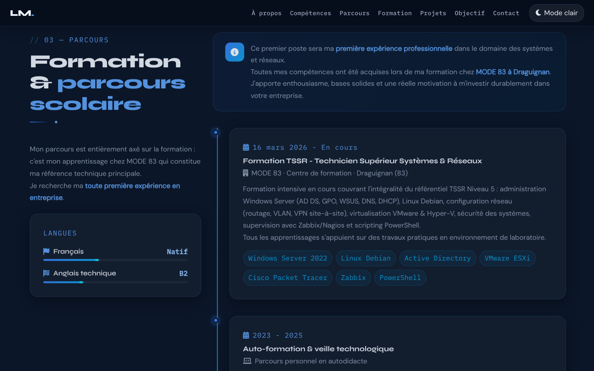
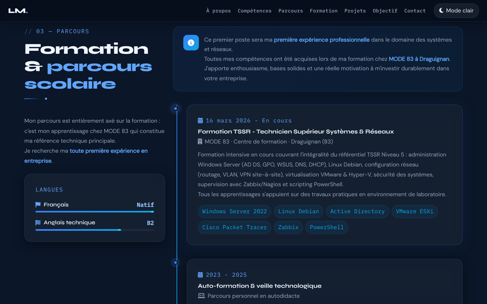
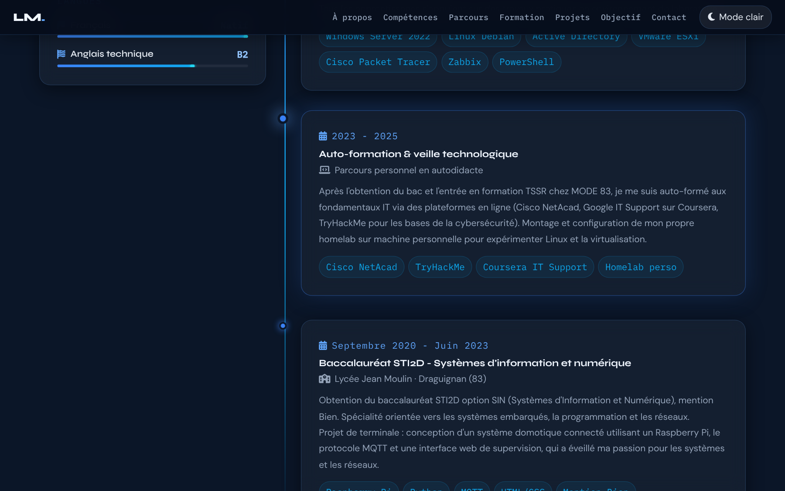
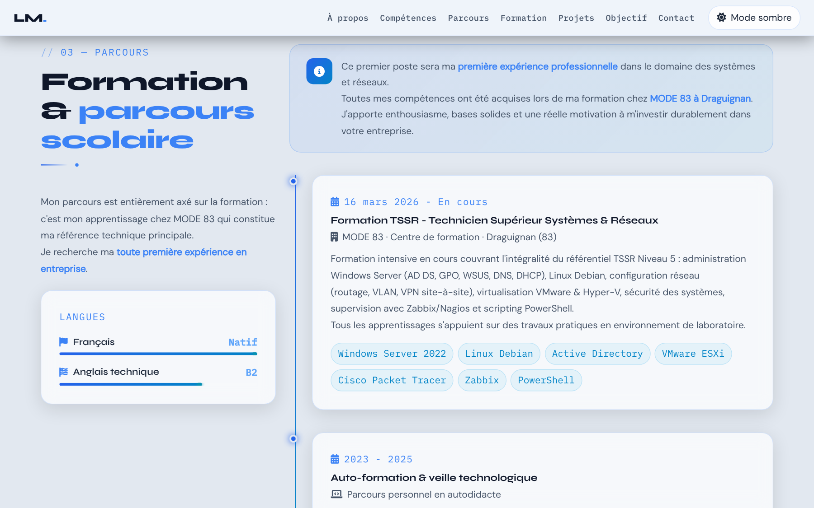
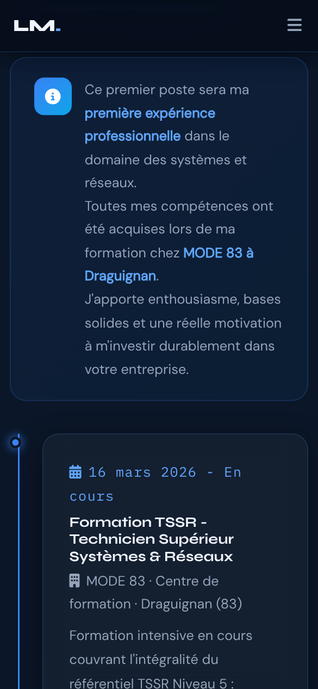

Positionnement
- Rôle
- Placer la ligne et les points exactement là où on le veut.
- Documentation
- MDN — position · MDN — left · MDN — box-sizing
- Lignes concernées
- 542, 544, 549, 552, 553.
Série « Portfolio TSSR » · 20 épisodes
Objectif de l'épisode
Un recruteur ne lit pas un parcours, il le survole. Alors on va le lui montrer d'un seul coup d'œil. Vous allez construire une vraie timeline : une ligne verticale en dégradé qui s'efface vers le bas, des points lumineux qui grossissent au survol, trois étapes de la formation TSSR jusqu'au bac, et une bannière qui transforme l'absence d'expérience en argument. Les barres de langues s'animent toutes seules, sans une ligne de JavaScript en plus.

Partie 2
À la fin de cet épisode, vous serez capable de dessiner une frise chronologique en CSS pur, de placer précisément un élément avec position: absolute, et de réutiliser des composants existants sans écrire de JavaScript.
::before étiré de haut en bas (top: 0; bottom: 0).position: relative / position: absolute..timeline-item:hover .timeline-dot).:last-child.<article>, des titres <h3> et des rôles de liste.Les mots des épisodes précédents sont dans les listes des épisodes 1, 2, 3, 4, 5 et 6.
::beforecontent, même vide.position: absolute place un élément avec top, left… par rapport au plus proche parent qui a position: relative.:last-child<article><h3><h2> de la section.notePartie 3
Cochez chaque case quand l'étape est faite. Vos coches sont mémorisées sur cet ordinateur.
Tout le nouveau code est écrit dans index.html. config.js, images/ et ressources/ restent identiques. Cet épisode n'ajoute que du CSS et du HTML.
Partie 4 · par rapport à l'épisode 6
L'épisode 7 ajoute deux blocs : du CSS et une section HTML. Aucune ligne n'est modifiée ni supprimée, et le JavaScript ne change pas. Les numéros de ligne ci-dessous sont ceux de votre fichier de l'épisode 6 (1033 lignes).
.tech-badge:hover (ligne 538) et la ligne vide qui suit.#parcours { à .premier-stage-banner strong, 53 lignes, suivies d'une ligne vide) : dans le premier <style>, juste avant #toast { (ligne 540).<style>, barre de navigation, Hero, À propos et Compétences, jusqu'à son </section>.</section> de la section Compétences (ligne 899), juste avant </main> (ligne 900).</main>, Bootstrap JS et tout le script, sans aucun changement.Résultat : le fichier passe de 1033 à 1206 lignes. Les numéros cités dans le reste de cette page sont ceux du nouveau fichier.
Les lignes précédées de + sont à ajouter ; les autres existent déjà.
Zone 1 — dans le premier <style>
.tech-badge:hover { … }
#parcours { background: var(--clr-bg2); }
… (timeline, ligne, points, dates, titres, tags, bannière)
.premier-stage-banner strong { … }
#toast { … }Zone 2 — dans le <main>
</section> (fin de Compétences)
<section id="parcours" aria-labelledby="parcours-title">
… (la section Parcours)
</section>
</main>Pourquoi pas de JavaScript ?
reveal : le module 4 (épisode 5) les fait apparaître..skill-bar[data-width] : le module 5 (épisode 6) les remplit..glass-card (épisode 5) : elles montent déjà au survol.Partie 5
Les règles pour reconnaître une source officielle restent celles de l'épisode 1. Les liens marqués s'ouvrent dans un nouvel onglet.
Partie 6
Même cycle : écrire, enregistrer, actualiser, observer, comprendre. On commence par le HTML : grâce aux épisodes 5 et 6, une bonne partie est déjà stylée. Puis on dessine la timeline, bloc par bloc.
Vous voyez : la colonne de gauche est déjà complète (sur-titre, titre, séparateur, introduction) et la carte Langues a ses deux barres qui se remplissent, grâce au module 5. À droite, les trois étapes sont dans des cartes en verre, mais sans ligne ni points ; la bannière et les tags sont du texte brut. Le lien « Parcours » du menu mène enfin à la section.
Vous voyez : la section Parcours prend un fond un peu plus clair que la section Compétences : on voit où l'une finit et où l'autre commence.
Vous voyez : les cartes se décalent vers la droite, et une ligne verticale bleue apparaît à leur gauche. Elle s'efface vers le bas.
Vous voyez : un point lumineux sur la ligne en face de chaque étape. Survolez une étape : son point grossit et brille davantage, pendant que la carte monte.
Vous voyez : la date en police terminal bleue, le titre en Syne, l'établissement et la description en gris, puis des tags bleu-vert en forme de pilule qui passent à la ligne.
Vous voyez : un encadré teinté de bleu, avec une pastille « i » à gauche et le texte à droite ; les mots importants sont en bleu.
Vous avez terminé quand votre fichier fait 1206 lignes, identiques au code de référence (bouton « Surligner les ajouts » de la partie 8), sans erreur rouge dans la Console.
Partie 7 · la plus importante
Chaque fiche répond aux quatre questions Quoi ?, Pourquoi ?, Comment ? et Où ?. Les numéros sont ceux du nouveau fichier de 1206 lignes. Les trois étapes suivent le même modèle : lisez en détail l'étape 1 (lignes 998 à 1021).
Le couple relative / absolute
.timeline { position: relative; padding-left: 2.5rem; }
.timeline::before { content: ''; position: absolute; left: .6rem; top: 0; bottom: 0; }
.timeline-item { position: relative; }
.timeline-dot { position: absolute; left: -2.5rem; top: .25rem; }Un élément en position: absolute se place par rapport au plus proche parent en position: relative. La ligne se place par rapport à la timeline (toute la hauteur) ; chaque point se place par rapport à son étape (en face de sa date). Le padding-left de 2,5 rem libère la place ; le left: -2.5rem des points y revient.
Ces lignes existent déjà ; seul leur numéro a changé. Le lien ouvre la fiche de l'épisode où elles ont été expliquées (les dossiers des épisodes doivent être côte à côte).
| Ligne (épisode 7) | Code | Fiche |
|---|---|---|
| 1 | <!DOCTYPE html> | Épisode 1, ligne 1 |
| 2 | <html lang="fr" data-theme="dark" dir="ltr"> | Épisode 1, ligne 2 |
| 3 | <head> | Épisode 1, ligne 3 |
| 4 | <meta charset="UTF-8" /> | Épisode 1, ligne 4 |
| 5 | <meta name="viewport" content="width=device-width, initia… | Épisode 1, ligne 5 |
| 6 | <meta name="description" content="Portfolio professionnel… | Épisode 1, ligne 6 |
| 7 | <meta name="keywords" content="TSSR, technicien systèmes … | Épisode 1, ligne 7 |
| 8 | <meta name="robots" content="index, follow" /> | Épisode 1, ligne 8 |
| 9 | <meta name="theme-color" content="#060d1a" /> | Épisode 1, ligne 9 |
| 10 | <meta name="author" content="Lucas Moreau" /> | Épisode 1, ligne 10 |
| 12 | <link rel="preconnect" href="https://fonts.googleapis.com… | Épisode 1, ligne 12 |
| 13 | <link rel="preconnect" href="https://fonts.gstatic.com" c… | Épisode 1, ligne 13 |
| 14 | <link href="https://fonts.googleapis.com/css2?family=Syne… | Épisode 1, ligne 14 |
| 16 | <link rel="stylesheet" href="https://cdn.jsdelivr.net/npm… | Épisode 1, ligne 16 |
| 17 | <link rel="stylesheet" href="https://cdnjs.cloudflare.com… | Épisode 1, ligne 17 |
| 18 | <link rel="stylesheet" href="https://cdnjs.cloudflare.com… | Épisode 1, ligne 18 |
| 20 | <script src="config.js"></script> | Épisode 1, ligne 20 |
| 21 | <script src="https://cdnjs.cloudflare.com/ajax/libs/pdf.j… | Épisode 1, ligne 21 |
| 23 | <link rel="icon" type="image/png" sizes="32x32" href="ima… | Épisode 1, ligne 23 |
| 24 | <link rel="icon" type="image/png" sizes="192x192" href="i… | Épisode 1, ligne 24 |
| 25 | <link rel="icon" type="image/webp" href="images/favicon-4… | Épisode 1, ligne 25 |
| 26 | <link rel="apple-touch-icon" sizes="180x180" href="images… | Épisode 1, ligne 26 |
| 28 | <title>Portfolio TSSR | Recherche d'emploi – Technicien S… | Épisode 1, ligne 28 |
| 29 | <style> | Épisode 2, ligne 29 |
| 30 | :root { | Épisode 2, ligne 30 |
| 31 | --clr-bg: #060d1a; | Épisode 2, ligne 31 |
| 32 | --clr-bg2: #0b1628; | Épisode 2, ligne 32 |
| 33 | --clr-surface: rgba(255,255,255,.04); | Épisode 2, ligne 33 |
| 34 | --clr-surface2: rgba(255,255,255,.07); | Épisode 2, ligne 34 |
| 35 | --clr-border: rgba(96,165,250,.18); | Épisode 2, ligne 35 |
| 36 | --clr-accent: #3b82f6; | Épisode 2, ligne 36 |
| 37 | --clr-accent2: #60a5fa; | Épisode 2, ligne 37 |
| 38 | --clr-accent3: #93c5fd; | Épisode 2, ligne 38 |
| 39 | --clr-teal: #0ea5e9; | Épisode 2, ligne 39 |
| 40 | --clr-cyan: #22d3ee; | Épisode 2, ligne 40 |
| 41 | --clr-text: #e2e8f0; | Épisode 2, ligne 41 |
| 42 | --clr-text-soft: #94a3b8; | Épisode 2, ligne 42 |
| 43 | --clr-text-faint: #475569; | Épisode 2, ligne 43 |
| 44 | --clr-heading: #f0f6ff; | Épisode 2, ligne 44 |
| 45 | --clr-white: #ffffff; | Épisode 2, ligne 45 |
| 46 | --clr-danger: #f87171; | Épisode 2, ligne 46 |
| 47 | --clr-success: #34d399; | Épisode 2, ligne 47 |
| 48 | --clr-warn: #fbbf24; | Épisode 2, ligne 48 |
| 49 | --radius-sm: 6px; | Épisode 2, ligne 49 |
| 50 | --radius-md: 12px; | Épisode 2, ligne 50 |
| 51 | --radius-lg: 20px; | Épisode 2, ligne 51 |
| 52 | --radius-xl: 32px; | Épisode 2, ligne 52 |
| 53 | --shadow-glow: 0 0 40px rgba(59,130,246,.25); | Épisode 2, ligne 53 |
| 54 | --shadow-card: 0 8px 32px rgba(0,0,0,.45); | Épisode 2, ligne 54 |
| 55 | --trans: .3s cubic-bezier(.4,0,.2,1); | Épisode 2, ligne 55 |
| 56 | --font-display: 'Syne', sans-serif; | Épisode 2, ligne 56 |
| 57 | --font-mono: 'IBM Plex Mono', monospace; | Épisode 2, ligne 57 |
| 58 | --font-body: 'DM Sans', sans-serif; | Épisode 2, ligne 58 |
| 59 | --fz-min: 1.05rem; | Épisode 2, ligne 59 |
| 60 | } | Épisode 2, ligne 60 |
| 62 | [data-theme="light"] { | Épisode 2, ligne 62 |
| 63 | --clr-bg: #f0f4fa; | Épisode 2, ligne 63 |
| 64 | --clr-bg2: #e2e8f0; | Épisode 2, ligne 64 |
| 65 | --clr-surface: rgba(255,255,255,.7); | Épisode 2, ligne 65 |
| 66 | --clr-surface2: rgba(255,255,255,.9); | Épisode 2, ligne 66 |
| 67 | --clr-border: rgba(59,130,246,.2); | Épisode 2, ligne 67 |
| 68 | --clr-accent: #2563eb; | Épisode 2, ligne 68 |
| 69 | --clr-accent2: #3b82f6; | Épisode 2, ligne 69 |
| 70 | --clr-accent3: #60a5fa; | Épisode 2, ligne 70 |
| 71 | --clr-teal: #0284c7; | Épisode 2, ligne 71 |
| 72 | --clr-cyan: #0891b2; | Épisode 2, ligne 72 |
| 73 | --clr-text: #1e293b; | Épisode 2, ligne 73 |
| 74 | --clr-text-soft: #475569; | Épisode 2, ligne 74 |
| 75 | --clr-text-faint: #94a3b8; | Épisode 2, ligne 75 |
| 76 | --clr-heading: #0f172a; | Épisode 2, ligne 76 |
| 77 | --clr-white: #ffffff; | Épisode 2, ligne 77 |
| 78 | --shadow-glow: 0 0 40px rgba(37,99,235,.15); | Épisode 2, ligne 78 |
| 79 | --shadow-card: 0 8px 32px rgba(0,0,0,.12); | Épisode 2, ligne 79 |
| 80 | } | Épisode 2, ligne 80 |
| 82 | *, *::before, *::after { box-sizing: border-box; margin: … | Épisode 2, ligne 82 |
| 84 | html { scroll-behavior: smooth; font-size: 16px; } | Épisode 2, ligne 84 |
| 86 | body { | Épisode 2, ligne 86 |
| 87 | font-family: var(--font-body); | Épisode 2, ligne 87 |
| 88 | background-color: var(--clr-bg); | Épisode 2, ligne 88 |
| 89 | color: var(--clr-text); | Épisode 2, ligne 89 |
| 90 | font-size: var(--fz-min); | Épisode 2, ligne 90 |
| 91 | line-height: 1.7; | Épisode 2, ligne 91 |
| 92 | overflow-x: hidden; | Épisode 2, ligne 92 |
| 93 | transition: background-color var(--trans), color var(--tr… | Épisode 2, ligne 93 |
| 94 | } | Épisode 2, ligne 94 |
| 96 | ::-webkit-scrollbar { width: 7px; } | Épisode 2, ligne 96 |
| 97 | ::-webkit-scrollbar-track { background: var(--clr… | Épisode 2, ligne 97 |
| 98 | ::-webkit-scrollbar-thumb { | Épisode 2, ligne 98 |
| 99 | background: linear-gradient(180deg, var(--clr-accent), va… | Épisode 2, ligne 99 |
| 100 | border-radius: 10px; height: 120px; | Épisode 2, ligne 100 |
| 101 | } | Épisode 2, ligne 101 |
| 102 | ::-webkit-scrollbar-thumb:hover { | Épisode 2, ligne 102 |
| 103 | background: linear-gradient(180deg, var(--clr-accent2), v… | Épisode 2, ligne 103 |
| 104 | box-shadow: 0 0 8px var(--clr-accent); | Épisode 2, ligne 104 |
| 105 | } | Épisode 2, ligne 105 |
| 107 | .skip-link { | Épisode 2, ligne 107 |
| 108 | position: absolute; | Épisode 2, ligne 108 |
| 109 | top: -60px; left: 1rem; | Épisode 2, ligne 109 |
| 110 | background: var(--clr-accent); | Épisode 2, ligne 110 |
| 111 | color: var(--clr-white); | Épisode 2, ligne 111 |
| 112 | padding: .6rem 1.2rem; | Épisode 2, ligne 112 |
| 113 | border-radius: var(--radius-md); | Épisode 2, ligne 113 |
| 114 | font-weight: 600; | Épisode 2, ligne 114 |
| 115 | font-size: var(--fz-min); | Épisode 2, ligne 115 |
| 116 | z-index: 9999; | Épisode 2, ligne 116 |
| 117 | transition: top .2s; | Épisode 2, ligne 117 |
| 118 | text-decoration: none; | Épisode 2, ligne 118 |
| 119 | } | Épisode 2, ligne 119 |
| 120 | .skip-link:focus { top: 1rem; } | Épisode 2, ligne 120 |
| 122 | #read-progress { | Épisode 2, ligne 122 |
| 123 | position: fixed; top: 0; left: 0; | Épisode 2, ligne 123 |
| 124 | height: 3px; width: 0%; | Épisode 2, ligne 124 |
| 125 | background: linear-gradient(90deg, var(--clr-accent), var… | Épisode 2, ligne 125 |
| 126 | z-index: 9998; | Épisode 2, ligne 126 |
| 127 | transition: width .1s linear; | Épisode 2, ligne 127 |
| 128 | box-shadow: 0 0 10px var(--clr-accent); | Épisode 2, ligne 128 |
| 129 | } | Épisode 2, ligne 129 |
| 131 | #mainNav { | Épisode 3, ligne 131 |
| 132 | position: fixed; top: 0; left: 0; right: 0; | Épisode 3, ligne 132 |
| 133 | z-index: 1050; | Épisode 3, ligne 133 |
| 134 | padding: .9rem 0; | Épisode 3, ligne 134 |
| 135 | background: rgba(6,13,26,.82); | Épisode 3, ligne 135 |
| 136 | backdrop-filter: blur(18px) saturate(1.4); | Épisode 3, ligne 136 |
| 137 | -webkit-backdrop-filter: blur(18px) saturate(1.4); | Épisode 3, ligne 137 |
| 138 | border-bottom: 1px solid var(--clr-border); | Épisode 3, ligne 138 |
| 139 | transition: all var(--trans); | Épisode 3, ligne 139 |
| 140 | } | Épisode 3, ligne 140 |
| 141 | #mainNav.scrolled { | Épisode 3, ligne 141 |
| 142 | padding: .55rem 0; | Épisode 3, ligne 142 |
| 143 | background: rgba(6,13,26,.95); | Épisode 3, ligne 143 |
| 144 | box-shadow: 0 4px 30px rgba(0,0,0,.4); | Épisode 3, ligne 144 |
| 145 | } | Épisode 3, ligne 145 |
| 146 | [data-theme="light"] #mainNav { background: rgba(240,244,… | Épisode 3, ligne 146 |
| 147 | [data-theme="light"] #mainNav.scrolled { background: rgba… | Épisode 3, ligne 147 |
| 149 | .nav-brand { | Épisode 3, ligne 149 |
| 150 | font-family: var(--font-display); | Épisode 3, ligne 150 |
| 151 | font-weight: 800; font-size: 1.3rem; | Épisode 3, ligne 151 |
| 152 | color: var(--clr-heading) !important; | Épisode 3, ligne 152 |
| 153 | text-decoration: none; letter-spacing: -.02em; | Épisode 3, ligne 153 |
| 154 | } | Épisode 3, ligne 154 |
| 155 | .nav-brand span { color: var(--clr-accent2); } | Épisode 3, ligne 155 |
| 157 | .navbar-nav .nav-link { | Épisode 3, ligne 157 |
| 158 | font-family: var(--font-mono); | Épisode 3, ligne 158 |
| 159 | font-size: .92rem; | Épisode 3, ligne 159 |
| 160 | font-weight: 500; | Épisode 3, ligne 160 |
| 161 | color: var(--clr-text-soft) !important; | Épisode 3, ligne 161 |
| 162 | letter-spacing: .02em; | Épisode 3, ligne 162 |
| 163 | padding: .4rem .5rem !important; | Épisode 3, ligne 163 |
| 164 | border-radius: var(--radius-sm); | Épisode 3, ligne 164 |
| 165 | transition: all var(--trans); | Épisode 3, ligne 165 |
| 166 | position: relative; | Épisode 3, ligne 166 |
| 167 | } | Épisode 3, ligne 167 |
| 168 | .navbar-nav .nav-link::before { | Épisode 3, ligne 168 |
| 169 | content: ''; | Épisode 3, ligne 169 |
| 170 | position: absolute; bottom: 0; left: 50%; right: 50%; | Épisode 3, ligne 170 |
| 171 | height: 2px; background: var(--clr-accent2); | Épisode 3, ligne 171 |
| 172 | border-radius: 2px; transition: all var(--trans); | Épisode 3, ligne 172 |
| 173 | } | Épisode 3, ligne 173 |
| 174 | .navbar-nav .nav-link:hover, | Épisode 3, ligne 174 |
| 175 | .navbar-nav .nav-link:focus { | Épisode 3, ligne 175 |
| 176 | color: var(--clr-accent2) !important; | Épisode 3, ligne 176 |
| 177 | background: rgba(59,130,246,.08); | Épisode 3, ligne 177 |
| 178 | } | Épisode 3, ligne 178 |
| 179 | .navbar-nav .nav-link:hover::before, | Épisode 3, ligne 179 |
| 180 | .navbar-nav .nav-link:focus::before { left: 10%; right: 1… | Épisode 3, ligne 180 |
| 182 | #themeToggle { | Épisode 3, ligne 182 |
| 183 | background: var(--clr-surface2); | Épisode 3, ligne 183 |
| 184 | border: 1px solid var(--clr-border); | Épisode 3, ligne 184 |
| 185 | color: var(--clr-text); | Épisode 3, ligne 185 |
| 186 | padding: .4rem .9rem; | Épisode 3, ligne 186 |
| 187 | border-radius: var(--radius-lg); | Épisode 3, ligne 187 |
| 188 | cursor: pointer; font-size: var(--fz-min); | Épisode 3, ligne 188 |
| 189 | transition: all var(--trans); | Épisode 3, ligne 189 |
| 190 | display: flex; align-items: center; gap: .5rem; | Épisode 3, ligne 190 |
| 191 | white-space: nowrap; | Épisode 3, ligne 191 |
| 192 | } | Épisode 3, ligne 192 |
| 193 | #themeToggle:hover { background: var(--clr-accent); color… | Épisode 3, ligne 193 |
| 194 | #themeToggle:focus-visible { outline: 2px solid var(--clr… | Épisode 3, ligne 194 |
| 196 | #hero { | Épisode 4, ligne 196 |
| 197 | min-height: 100vh; | Épisode 4, ligne 197 |
| 198 | display: flex; align-items: center; | Épisode 4, ligne 198 |
| 199 | position: relative; overflow: hidden; | Épisode 4, ligne 199 |
| 200 | padding: 7rem 0 4rem; | Épisode 4, ligne 200 |
| 201 | } | Épisode 4, ligne 201 |
| 202 | #hero::before { | Épisode 4, ligne 202 |
| 203 | content: ''; position: absolute; inset: 0; | Épisode 4, ligne 203 |
| 204 | background-image: | Épisode 4, ligne 204 |
| 205 | linear-gradient(rgba(59,130,246,.07) 1px, transparent 1px), | Épisode 4, ligne 205 |
| 206 | linear-gradient(90deg, rgba(59,130,246,.07) 1px, transpar… | Épisode 4, ligne 206 |
| 207 | background-size: 40px 40px; z-index: 0; | Épisode 4, ligne 207 |
| 208 | } | Épisode 4, ligne 208 |
| 209 | #hero::after { | Épisode 4, ligne 209 |
| 210 | content: ''; position: absolute; | Épisode 4, ligne 210 |
| 211 | top: -10%; left: -10%; width: 70%; height: 70%; | Épisode 4, ligne 211 |
| 212 | background: radial-gradient(ellipse at center, rgba(59,13… | Épisode 4, ligne 212 |
| 213 | z-index: 0; animation: floatGlow 6s ease-in-out infinite … | Épisode 4, ligne 213 |
| 214 | } | Épisode 4, ligne 214 |
| 215 | @keyframes floatGlow { | Épisode 4, ligne 215 |
| 216 | from { transform: translate(0,0) scale(1); } | Épisode 4, ligne 216 |
| 217 | to { transform: translate(4%,3%) scale(1.05); } | Épisode 4, ligne 217 |
| 218 | } | Épisode 4, ligne 218 |
| 219 | .hero-content { position: relative; z-index: 1; } | Épisode 4, ligne 219 |
| 221 | .status-badge { | Épisode 4, ligne 221 |
| 222 | display: inline-flex; align-items: center; gap: .5rem; | Épisode 4, ligne 222 |
| 223 | background: rgba(52,211,153,.1); | Épisode 4, ligne 223 |
| 224 | border: 1px solid rgba(52,211,153,.3); | Épisode 4, ligne 224 |
| 225 | color: var(--clr-success); | Épisode 4, ligne 225 |
| 226 | font-family: var(--font-mono); | Épisode 4, ligne 226 |
| 227 | font-size: var(--fz-min); font-weight: 500; | Épisode 4, ligne 227 |
| 228 | letter-spacing: .04em; | Épisode 4, ligne 228 |
| 229 | padding: .4rem 1rem; border-radius: 100px; | Épisode 4, ligne 229 |
| 230 | margin-bottom: 1.4rem; | Épisode 4, ligne 230 |
| 231 | } | Épisode 4, ligne 231 |
| 232 | .status-dot { | Épisode 4, ligne 232 |
| 233 | width: 7px; height: 7px; | Épisode 4, ligne 233 |
| 234 | background: var(--clr-success); border-radius: 50%; | Épisode 4, ligne 234 |
| 235 | animation: pulse-dot 1.6s ease infinite; flex-shrink: 0; | Épisode 4, ligne 235 |
| 236 | } | Épisode 4, ligne 236 |
| 237 | @keyframes pulse-dot { | Épisode 4, ligne 237 |
| 238 | 0%,100% { opacity: 1; transform: scale(1); } | Épisode 4, ligne 238 |
| 239 | 50% { opacity: .5; transform: scale(.75); } | Épisode 4, ligne 239 |
| 240 | } | Épisode 4, ligne 240 |
| 242 | .hero-title { | Épisode 4, ligne 242 |
| 243 | font-family: var(--font-display); font-weight: 800; | Épisode 4, ligne 243 |
| 244 | font-size: clamp(2.4rem, 6vw, 4.2rem); | Épisode 4, ligne 244 |
| 245 | line-height: 1.1; color: var(--clr-heading); | Épisode 4, ligne 245 |
| 246 | letter-spacing: -.03em; margin-bottom: 1rem; | Épisode 4, ligne 246 |
| 247 | } | Épisode 4, ligne 247 |
| 248 | .hero-title .accent { color: var(--clr-accent2); } | Épisode 4, ligne 248 |
| 249 | .hero-title .typing-cursor { | Épisode 4, ligne 249 |
| 250 | display: inline-block; width: 3px; height: 1em; | Épisode 4, ligne 250 |
| 251 | background: var(--clr-accent2); margin-left: 3px; | Épisode 4, ligne 251 |
| 252 | vertical-align: text-bottom; | Épisode 4, ligne 252 |
| 253 | animation: blink .75s step-end infinite; | Épisode 4, ligne 253 |
| 254 | } | Épisode 4, ligne 254 |
| 255 | @keyframes blink { 50% { opacity: 0; } } | Épisode 4, ligne 255 |
| 257 | .hero-subtitle { | Épisode 4, ligne 257 |
| 258 | font-family: var(--font-mono); | Épisode 4, ligne 258 |
| 259 | font-size: clamp(var(--fz-min), 1.8vw, 1.15rem); | Épisode 4, ligne 259 |
| 260 | color: var(--clr-accent3); letter-spacing: .04em; margin-… | Épisode 4, ligne 260 |
| 261 | } | Épisode 4, ligne 261 |
| 262 | .hero-desc { | Épisode 4, ligne 262 |
| 263 | font-size: clamp(var(--fz-min), 2vw, 1.15rem); | Épisode 4, ligne 263 |
| 264 | color: var(--clr-text-soft); | Épisode 4, ligne 264 |
| 265 | max-width: 520px; margin-bottom: 2.2rem; line-height: 1.8; | Épisode 4, ligne 265 |
| 266 | } | Épisode 4, ligne 266 |
| 268 | .hero-avatar-wrap { | Épisode 4, ligne 268 |
| 269 | position: relative; display: flex; | Épisode 4, ligne 269 |
| 270 | justify-content: center; align-items: center; | Épisode 4, ligne 270 |
| 271 | } | Épisode 4, ligne 271 |
| 272 | .hero-avatar-ring { | Épisode 4, ligne 272 |
| 273 | position: relative; | Épisode 4, ligne 273 |
| 274 | width: clamp(220px,30vw,300px); | Épisode 4, ligne 274 |
| 275 | height: clamp(220px,30vw,300px); | Épisode 4, ligne 275 |
| 276 | } | Épisode 4, ligne 276 |
| 277 | .hero-avatar-ring::before, | Épisode 4, ligne 277 |
| 278 | .hero-avatar-ring::after { | Épisode 4, ligne 278 |
| 279 | content: ''; | Épisode 4, ligne 279 |
| 280 | position: absolute; | Épisode 4, ligne 280 |
| 281 | inset: -12px; | Épisode 4, ligne 281 |
| 282 | border-radius: 50%; | Épisode 4, ligne 282 |
| 283 | border: 2px solid transparent; | Épisode 4, ligne 283 |
| 285 | background: conic-gradient( | Épisode 4, ligne 285 |
| 286 | from 0deg, | Épisode 4, ligne 286 |
| 287 | var(--clr-accent), | Épisode 4, ligne 287 |
| 288 | var(--clr-teal), | Épisode 4, ligne 288 |
| 289 | transparent 60% | Épisode 4, ligne 289 |
| 290 | ) border-box; | Épisode 4, ligne 290 |
| 292 | -webkit-mask: | Épisode 4, ligne 292 |
| 293 | linear-gradient(#fff 0 0) padding-box, | Épisode 4, ligne 293 |
| 294 | linear-gradient(#fff 0 0); | Épisode 4, ligne 294 |
| 296 | -webkit-mask-composite: destination-out; | Épisode 4, ligne 296 |
| 298 | mask: | Épisode 4, ligne 298 |
| 299 | linear-gradient(#fff 0 0) padding-box, | Épisode 4, ligne 299 |
| 300 | linear-gradient(#fff 0 0); | Épisode 4, ligne 300 |
| 302 | mask-composite: exclude; | Épisode 4, ligne 302 |
| 304 | animation: spinRing 8s linear infinite; | Épisode 4, ligne 304 |
| 305 | } | Épisode 4, ligne 305 |
| 306 | .hero-avatar-ring::after { | Épisode 4, ligne 306 |
| 307 | inset: -22px; border-width: 1px; opacity: .4; | Épisode 4, ligne 307 |
| 308 | animation-duration: 14s; animation-direction: reverse; | Épisode 4, ligne 308 |
| 309 | } | Épisode 4, ligne 309 |
| 310 | @keyframes spinRing { to { transform: rotate(360deg); } } | Épisode 4, ligne 310 |
| 312 | .hero-avatar { | Épisode 4, ligne 312 |
| 313 | width: 100%; height: 100%; border-radius: 50%; | Épisode 4, ligne 313 |
| 314 | background: linear-gradient(145deg, #1a3a5c 0%, #0b1e38 4… | Épisode 4, ligne 314 |
| 315 | border: 3px solid var(--clr-border); | Épisode 4, ligne 315 |
| 316 | display: flex; flex-direction: column; | Épisode 4, ligne 316 |
| 317 | align-items: center; justify-content: center; gap: .4rem; | Épisode 4, ligne 317 |
| 318 | overflow: hidden; position: relative; | Épisode 4, ligne 318 |
| 319 | } | Épisode 4, ligne 319 |
| 320 | .hero-avatar i { font-size: clamp(4rem,10vw,5.5rem); colo… | Épisode 4, ligne 320 |
| 321 | .hero-avatar .avatar-label { | Épisode 4, ligne 321 |
| 322 | font-family: var(--font-mono); font-size: var(--fz-min); | Épisode 4, ligne 322 |
| 323 | color: var(--clr-accent2); letter-spacing: .1em; opacity:… | Épisode 4, ligne 323 |
| 324 | } | Épisode 4, ligne 324 |
| 326 | .floating-chip { | Épisode 4, ligne 326 |
| 327 | position: absolute; | Épisode 4, ligne 327 |
| 328 | background: var(--clr-surface); backdrop-filter: blur(10px); | Épisode 4, ligne 328 |
| 329 | border: 1px solid var(--clr-border); border-radius: var(-… | Épisode 4, ligne 329 |
| 330 | padding: .5rem 1rem; font-family: var(--font-mono); | Épisode 4, ligne 330 |
| 331 | font-size: var(--fz-min); color: var(--clr-accent3); whit… | Épisode 4, ligne 331 |
| 332 | animation: chipFloat 4s ease-in-out infinite alternate; | Épisode 4, ligne 332 |
| 333 | } | Épisode 4, ligne 333 |
| 334 | .floating-chip:nth-child(2) { top: 5%; left: -8%; anima… | Épisode 4, ligne 334 |
| 335 | .floating-chip:nth-child(3) { bottom: 8%; right: -8%; ani… | Épisode 4, ligne 335 |
| 336 | .floating-chip:nth-child(4) { top: 40%; right: -12%; ani… | Épisode 4, ligne 336 |
| 337 | @keyframes chipFloat { | Épisode 4, ligne 337 |
| 338 | from { transform: translateY(0); } | Épisode 4, ligne 338 |
| 339 | to { transform: translateY(-8px); } | Épisode 4, ligne 339 |
| 340 | } | Épisode 4, ligne 340 |
| 342 | .btn-hero-primary { | Épisode 4, ligne 342 |
| 343 | display: inline-flex; align-items: center; gap: .55rem; | Épisode 4, ligne 343 |
| 344 | background: linear-gradient(135deg, var(--clr-accent), va… | Épisode 4, ligne 344 |
| 345 | color: #fff; font-family: var(--font-display); font-weigh… | Épisode 4, ligne 345 |
| 346 | font-size: var(--fz-min); padding: .85rem 1.9rem; | Épisode 4, ligne 346 |
| 347 | border-radius: var(--radius-lg); text-decoration: none; b… | Épisode 4, ligne 347 |
| 348 | cursor: pointer; transition: all var(--trans); | Épisode 4, ligne 348 |
| 349 | box-shadow: 0 4px 24px rgba(59,130,246,.35); | Épisode 4, ligne 349 |
| 350 | } | Épisode 4, ligne 350 |
| 351 | .btn-hero-primary:hover { transform: translateY(-3px); bo… | Épisode 4, ligne 351 |
| 352 | .btn-hero-primary:focus-visible { outline: 3px solid var(… | Épisode 4, ligne 352 |
| 354 | .btn-hero-secondary { | Épisode 4, ligne 354 |
| 355 | display: inline-flex; align-items: center; gap: .55rem; | Épisode 4, ligne 355 |
| 356 | background: transparent; color: var(--clr-text); | Épisode 4, ligne 356 |
| 357 | font-family: var(--font-display); font-weight: 600; | Épisode 4, ligne 357 |
| 358 | font-size: var(--fz-min); padding: .85rem 1.9rem; | Épisode 4, ligne 358 |
| 359 | border-radius: var(--radius-lg); text-decoration: none; | Épisode 4, ligne 359 |
| 360 | border: 1px solid var(--clr-border); cursor: pointer; | Épisode 4, ligne 360 |
| 361 | transition: all var(--trans); | Épisode 4, ligne 361 |
| 362 | } | Épisode 4, ligne 362 |
| 363 | .btn-hero-secondary:hover { | Épisode 4, ligne 363 |
| 364 | background: var(--clr-surface2); border-color: var(--clr-… | Épisode 4, ligne 364 |
| 365 | color: var(--clr-accent2); transform: translateY(-3px); | Épisode 4, ligne 365 |
| 366 | } | Épisode 4, ligne 366 |
| 367 | .btn-hero-secondary:focus-visible { outline: 3px solid va… | Épisode 4, ligne 367 |
| 369 | .hero-stats { display: flex; gap: 2rem; margin-top: 2.8re… | Épisode 4, ligne 369 |
| 370 | .hero-stat { text-align: left; } | Épisode 4, ligne 370 |
| 371 | .hero-stat .stat-val { | Épisode 4, ligne 371 |
| 372 | font-family: var(--font-display); font-weight: 800; font-… | Épisode 4, ligne 372 |
| 373 | color: var(--clr-heading); line-height: 1; | Épisode 4, ligne 373 |
| 374 | } | Épisode 4, ligne 374 |
| 375 | .hero-stat .stat-val span { color: var(--clr-accent2); } | Épisode 4, ligne 375 |
| 376 | .hero-stat .stat-lbl { | Épisode 4, ligne 376 |
| 377 | font-family: var(--font-mono); font-size: var(--fz-min); | Épisode 4, ligne 377 |
| 378 | color: var(--clr-text-faint); letter-spacing: .04em; | Épisode 4, ligne 378 |
| 379 | margin-top: .3rem; line-height: 1.4; | Épisode 4, ligne 379 |
| 380 | } | Épisode 4, ligne 380 |
| 381 | .hero-stat-sep { width: 1px; background: var(--clr-border… | Épisode 4, ligne 381 |
| 383 | .scroll-indicator { | Épisode 4, ligne 383 |
| 384 | position: absolute; bottom: 2.5rem; left: 50%; | Épisode 4, ligne 384 |
| 385 | transform: translateX(-50%); | Épisode 4, ligne 385 |
| 386 | display: flex; flex-direction: column; align-items: cente… | Épisode 4, ligne 386 |
| 387 | cursor: pointer; animation: bounceDown 2s ease infinite; … | Épisode 4, ligne 387 |
| 388 | text-decoration: none; | Épisode 4, ligne 388 |
| 389 | } | Épisode 4, ligne 389 |
| 390 | .scroll-indicator span { | Épisode 4, ligne 390 |
| 391 | font-family: var(--font-mono); font-size: var(--fz-min); | Épisode 4, ligne 391 |
| 392 | letter-spacing: .08em; color: var(--clr-text-faint); | Épisode 4, ligne 392 |
| 393 | } | Épisode 4, ligne 393 |
| 394 | .scroll-indicator i { color: var(--clr-accent2); font-siz… | Épisode 4, ligne 394 |
| 395 | @keyframes bounceDown { | Épisode 4, ligne 395 |
| 396 | 0%,20%,50%,80%,100% { transform: translateX(-50%) transla… | Épisode 4, ligne 396 |
| 397 | 40% { transform: translateX(-50%) translateY(6px); } | Épisode 4, ligne 397 |
| 398 | 60% { transform: translateX(-50%) translateY(3px); } | Épisode 4, ligne 398 |
| 399 | } | Épisode 4, ligne 399 |
| 401 | section { padding: 5.5rem 0; } | Épisode 5, ligne 401 |
| 403 | .section-label { | Épisode 5, ligne 403 |
| 404 | font-family: var(--font-mono); font-size: var(--fz-min); | Épisode 5, ligne 404 |
| 405 | letter-spacing: .12em; color: var(--clr-accent2); | Épisode 5, ligne 405 |
| 406 | text-transform: uppercase; display: flex; align-items: ce… | Épisode 5, ligne 406 |
| 407 | margin-bottom: .8rem; | Épisode 5, ligne 407 |
| 408 | } | Épisode 5, ligne 408 |
| 409 | .section-label::before { content: '//'; opacity: .5; } | Épisode 5, ligne 409 |
| 411 | .section-title { | Épisode 5, ligne 411 |
| 412 | font-family: var(--font-display); font-weight: 800; | Épisode 5, ligne 412 |
| 413 | font-size: clamp(1.8rem, 4vw, 2.8rem); | Épisode 5, ligne 413 |
| 414 | color: var(--clr-heading); letter-spacing: -.02em; | Épisode 5, ligne 414 |
| 415 | line-height: 1.15; margin-bottom: 1rem; | Épisode 5, ligne 415 |
| 416 | } | Épisode 5, ligne 416 |
| 417 | .section-title .accent { color: var(--clr-accent2); } | Épisode 5, ligne 417 |
| 419 | .section-desc { | Épisode 5, ligne 419 |
| 420 | color: var(--clr-text-soft); font-size: var(--fz-min); | Épisode 5, ligne 420 |
| 421 | max-width: 600px; line-height: 1.75; | Épisode 5, ligne 421 |
| 422 | } | Épisode 5, ligne 422 |
| 424 | .section-divider { | Épisode 5, ligne 424 |
| 425 | display: flex; align-items: center; gap: .8rem; margin: .… | Épisode 5, ligne 425 |
| 426 | } | Épisode 5, ligne 426 |
| 427 | .section-divider .line { | Épisode 5, ligne 427 |
| 428 | height: 2px; width: 48px; | Épisode 5, ligne 428 |
| 429 | background: linear-gradient(90deg, var(--clr-accent), tra… | Épisode 5, ligne 429 |
| 430 | border-radius: 2px; | Épisode 5, ligne 430 |
| 431 | } | Épisode 5, ligne 431 |
| 432 | .section-divider .dot { | Épisode 5, ligne 432 |
| 433 | width: 6px; height: 6px; border-radius: 50%; background: … | Épisode 5, ligne 433 |
| 434 | } | Épisode 5, ligne 434 |
| 436 | .reveal { | Épisode 5, ligne 436 |
| 437 | opacity: 0; transform: translateY(30px); | Épisode 5, ligne 437 |
| 438 | transition: opacity .65s cubic-bezier(.4,0,.2,1), transfo… | Épisode 5, ligne 438 |
| 439 | } | Épisode 5, ligne 439 |
| 440 | .reveal.visible { opacity: 1; transform: translateY(0); } | Épisode 5, ligne 440 |
| 441 | .reveal-left { transform: translateX(-30px); } | Épisode 5, ligne 441 |
| 442 | .reveal-right { transform: translateX(30px); } | Épisode 5, ligne 442 |
| 443 | .reveal-left.visible, .reveal-right.visible { transform: … | Épisode 5, ligne 443 |
| 445 | .glass-card { | Épisode 5, ligne 445 |
| 446 | background: var(--clr-surface); backdrop-filter: blur(14px); | Épisode 5, ligne 446 |
| 447 | -webkit-backdrop-filter: blur(14px); | Épisode 5, ligne 447 |
| 448 | border: 1px solid var(--clr-border); border-radius: var(-… | Épisode 5, ligne 448 |
| 449 | padding: 2rem; transition: all var(--trans); box-shadow: … | Épisode 5, ligne 449 |
| 450 | } | Épisode 5, ligne 450 |
| 451 | .glass-card:hover { | Épisode 5, ligne 451 |
| 452 | border-color: rgba(59,130,246,.4); | Épisode 5, ligne 452 |
| 453 | box-shadow: var(--shadow-glow), var(--shadow-card); trans… | Épisode 5, ligne 453 |
| 454 | } | Épisode 5, ligne 454 |
| 456 | #about { background: var(--clr-bg2); } | Épisode 5, ligne 456 |
| 458 | .about-text p { | Épisode 5, ligne 458 |
| 459 | color: var(--clr-text); font-size: var(--fz-min); | Épisode 5, ligne 459 |
| 460 | line-height: 1.85; margin-bottom: 1.1rem; | Épisode 5, ligne 460 |
| 461 | } | Épisode 5, ligne 461 |
| 462 | .about-text strong { color: var(--clr-accent2); font-weig… | Épisode 5, ligne 462 |
| 464 | .about-info-grid { | Épisode 5, ligne 464 |
| 465 | display: grid; grid-template-columns: 1fr 1fr; gap: .85re… | Épisode 5, ligne 465 |
| 466 | } | Épisode 5, ligne 466 |
| 467 | .about-info-item { | Épisode 5, ligne 467 |
| 468 | display: flex; align-items: center; gap: .65rem; | Épisode 5, ligne 468 |
| 469 | font-size: var(--fz-min); color: var(--clr-text-soft); | Épisode 5, ligne 469 |
| 470 | } | Épisode 5, ligne 470 |
| 471 | .about-info-item i { width: 20px; color: var(--clr-accent… | Épisode 5, ligne 471 |
| 473 | .motive-list { list-style: none; padding: 0; display: fle… | Épisode 5, ligne 473 |
| 474 | .motive-list li { | Épisode 5, ligne 474 |
| 475 | display: flex; align-items: flex-start; gap: .85rem; | Épisode 5, ligne 475 |
| 476 | font-size: var(--fz-min); color: var(--clr-text-soft); | Épisode 5, ligne 476 |
| 477 | padding: .8rem 1rem; background: var(--clr-surface); | Épisode 5, ligne 477 |
| 478 | border: 1px solid var(--clr-border); border-radius: var(-… | Épisode 5, ligne 478 |
| 479 | transition: all var(--trans); | Épisode 5, ligne 479 |
| 480 | } | Épisode 5, ligne 480 |
| 481 | .motive-list li:hover { border-color: var(--clr-accent2);… | Épisode 5, ligne 481 |
| 482 | .motive-list li .ico { | Épisode 5, ligne 482 |
| 483 | width: 34px; height: 34px; | Épisode 5, ligne 483 |
| 484 | background: linear-gradient(135deg, var(--clr-accent), va… | Épisode 5, ligne 484 |
| 485 | border-radius: var(--radius-sm); display: flex; align-ite… | Épisode 5, ligne 485 |
| 486 | justify-content: center; flex-shrink: 0; font-size: var(-… | Épisode 5, ligne 486 |
| 487 | } | Épisode 5, ligne 487 |
| 488 | .motive-list li strong { | Épisode 5, ligne 488 |
| 489 | color: var(--clr-heading); display: block; | Épisode 5, ligne 489 |
| 490 | margin-bottom: .2rem; font-size: var(--fz-min); | Épisode 5, ligne 490 |
| 491 | } | Épisode 5, ligne 491 |
| 493 | #skills { background: var(--clr-bg); } | Épisode 6, ligne 493 |
| 495 | .skill-cat-title { | Épisode 5, ligne 493 |
| 496 | font-family: var(--font-mono); font-size: var(--fz-min); | Épisode 5, ligne 494 |
| 497 | letter-spacing: .1em; color: var(--clr-accent2); | Épisode 5, ligne 495 |
| 498 | text-transform: uppercase; margin-bottom: 1.2rem; | Épisode 5, ligne 496 |
| 499 | } | Épisode 5, ligne 497 |
| 501 | .skill-card { | Épisode 6, ligne 501 |
| 502 | background: var(--clr-surface); border: 1px solid var(--c… | Épisode 6, ligne 502 |
| 503 | border-radius: var(--radius-md); padding: 1.2rem 1.4rem; | Épisode 6, ligne 503 |
| 504 | transition: all var(--trans); cursor: default; | Épisode 6, ligne 504 |
| 505 | } | Épisode 6, ligne 505 |
| 506 | .skill-card:hover { | Épisode 6, ligne 506 |
| 507 | border-color: rgba(59,130,246,.45); background: var(--clr… | Épisode 6, ligne 507 |
| 508 | transform: translateY(-3px); box-shadow: 0 6px 24px rgba(… | Épisode 6, ligne 508 |
| 509 | } | Épisode 6, ligne 509 |
| 510 | .skill-header { display: flex; justify-content: space-bet… | Épisode 6, ligne 510 |
| 511 | .skill-name { | Épisode 6, ligne 511 |
| 512 | display: flex; align-items: center; gap: .6rem; | Épisode 6, ligne 512 |
| 513 | font-family: var(--font-display); font-weight: 600; | Épisode 6, ligne 513 |
| 514 | font-size: var(--fz-min); color: var(--clr-text); | Épisode 6, ligne 514 |
| 515 | } | Épisode 6, ligne 515 |
| 516 | .skill-name i { color: var(--clr-accent2); font-size: var… | Épisode 6, ligne 516 |
| 517 | .skill-pct { font-family: var(--font-mono); font-size: va… | Épisode 6, ligne 517 |
| 519 | .skill-bar-bg { height: 5px; background: rgba(255,255,255… | Épisode 6, ligne 519 |
| 520 | .skill-bar { | Épisode 6, ligne 520 |
| 521 | height: 100%; border-radius: 10px; | Épisode 6, ligne 521 |
| 522 | background: linear-gradient(90deg, var(--clr-accent), var… | Épisode 6, ligne 522 |
| 523 | width: 0%; transition: width 1.2s cubic-bezier(.4,0,.2,1)… | Épisode 6, ligne 523 |
| 524 | } | Épisode 6, ligne 524 |
| 525 | .skill-bar::after { | Épisode 6, ligne 525 |
| 526 | content: ''; position: absolute; right: 0; top: 50%; tran… | Épisode 6, ligne 526 |
| 527 | width: 8px; height: 8px; background: var(--clr-cyan); | Épisode 6, ligne 527 |
| 528 | border-radius: 50%; box-shadow: 0 0 6px var(--clr-cyan); | Épisode 6, ligne 528 |
| 529 | } | Épisode 6, ligne 529 |
| 531 | .tech-badge { | Épisode 6, ligne 531 |
| 532 | display: inline-flex; align-items: center; gap: .4rem; | Épisode 6, ligne 532 |
| 533 | background: var(--clr-surface); border: 1px solid var(--c… | Épisode 6, ligne 533 |
| 534 | padding: .4rem .85rem; border-radius: 100px; | Épisode 6, ligne 534 |
| 535 | font-family: var(--font-mono); font-size: var(--fz-min); | Épisode 6, ligne 535 |
| 536 | color: var(--clr-text-soft); transition: all var(--trans); | Épisode 6, ligne 536 |
| 537 | } | Épisode 6, ligne 537 |
| 538 | .tech-badge:hover { border-color: var(--clr-accent2); col… | Épisode 6, ligne 538 |
| 594 | #toast { | Épisode 3, ligne 196 |
| 595 | position: fixed; bottom: 5.5rem; right: 2rem; | Épisode 3, ligne 197 |
| 596 | background: var(--clr-bg2); border: 1px solid var(--clr-b… | Épisode 3, ligne 198 |
| 597 | border-radius: var(--radius-md); padding: .9rem 1.4rem; | Épisode 3, ligne 199 |
| 598 | font-size: var(--fz-min); color: var(--clr-text); z-index… | Épisode 3, ligne 200 |
| 599 | opacity: 0; transform: translateX(30px); | Épisode 3, ligne 201 |
| 600 | transition: all .35s cubic-bezier(.4,0,.2,1); | Épisode 3, ligne 202 |
| 601 | max-width: 300px; box-shadow: var(--shadow-card); pointer… | Épisode 3, ligne 203 |
| 602 | } | Épisode 3, ligne 204 |
| 603 | #toast.show { opacity: 1; transform: translateX(0); } | Épisode 3, ligne 205 |
| 605 | @media (max-width: 991.98px) { .hero-avatar-wrap { margin… | Épisode 4, ligne 412 |
| 606 | @media (max-width: 767.98px) { section { padding: 4rem 0;… | Épisode 5, ligne 511 |
| 607 | @media (max-width: 575.98px) { #hero { padding: 6rem 0 3r… | Épisode 4, ligne 414 |
| 608 | @media (max-width: 319.98px) { .hero-title { font-size: 1… | Épisode 5, ligne 513 |
| 610 | :focus-visible { outline: 2px solid var(--clr-accent2); o… | Épisode 2, ligne 131 |
| 611 | ::selection { background: rgba(59,130,246,.3); color: var… | Épisode 2, ligne 132 |
| 612 | </style> | Épisode 2, ligne 133 |
| 614 | <style> | Épisode 3, ligne 211 |
| 615 | .navbar-nav { flex-wrap: nowrap; } | Épisode 3, ligne 212 |
| 616 | .navbar-nav .nav-link { white-space: nowrap; } | Épisode 3, ligne 213 |
| 617 | </style> | Épisode 3, ligne 214 |
| 618 | </head> | Épisode 1, ligne 29 |
| 620 | <body> | Épisode 1, ligne 31 |
| 621 | <a href="#main-content" class="skip-link">Passer au conte… | Épisode 2, ligne 137 |
| 622 | <div id="toast" role="status" aria-live="polite"></div> | Épisode 3, ligne 219 |
| 624 | <header> | Épisode 3, ligne 221 |
| 625 | <nav id="mainNav" class="navbar navbar-expand-lg" role="n… | Épisode 3, ligne 222 |
| 626 | <div class="container-fluid px-3 px-xl-4"> | Épisode 3, ligne 223 |
| 627 | <a class="nav-brand navbar-brand" href="#hero" aria-label… | Épisode 3, ligne 224 |
| 629 | <button class="navbar-toggler border-0 p-1" type="button" | Épisode 3, ligne 226 |
| 630 | data-bs-toggle="collapse" data-bs-target="#navContent" | Épisode 3, ligne 227 |
| 631 | aria-controls="navContent" aria-expanded="false" | Épisode 3, ligne 228 |
| 632 | aria-label="Ouvrir le menu de navigation" | Épisode 3, ligne 229 |
| 633 | style="color: var(--clr-text-soft);"> | Épisode 3, ligne 230 |
| 634 | <i class="fas fa-bars" aria-hidden="true"></i> | Épisode 3, ligne 231 |
| 635 | </button> | Épisode 3, ligne 232 |
| 637 | <div class="collapse navbar-collapse" id="navContent"> | Épisode 3, ligne 234 |
| 638 | <ul class="navbar-nav ms-auto align-items-lg-center gap-1… | Épisode 3, ligne 235 |
| 639 | <li class="nav-item"><a class="nav-link" href="#about">À … | Épisode 3, ligne 236 |
| 640 | <li class="nav-item"><a class="nav-link" href="#skills">C… | Épisode 3, ligne 237 |
| 641 | <li class="nav-item"><a class="nav-link" href="#parcours"… | Épisode 3, ligne 238 |
| 642 | <li class="nav-item"><a class="nav-link" href="#formation… | Épisode 3, ligne 239 |
| 643 | <li class="nav-item"><a class="nav-link" href="#projects"… | Épisode 3, ligne 240 |
| 644 | <li class="nav-item"><a class="nav-link" href="#stage">Ob… | Épisode 3, ligne 241 |
| 645 | <li class="nav-item"><a class="nav-link" href="#contact">… | Épisode 3, ligne 242 |
| 646 | </ul> | Épisode 3, ligne 243 |
| 647 | <div class="ms-lg-3 mt-2 mt-lg-0"> | Épisode 3, ligne 244 |
| 648 | <button id="themeToggle" aria-label="Basculer le thème cl… | Épisode 3, ligne 245 |
| 649 | <i class="fas fa-moon" id="themeIcon" aria-hidden="true">… | Épisode 3, ligne 246 |
| 650 | <span id="themeLabel">Mode clair</span> | Épisode 3, ligne 247 |
| 651 | </button> | Épisode 3, ligne 248 |
| 652 | </div> | Épisode 3, ligne 249 |
| 653 | </div> | Épisode 3, ligne 250 |
| 654 | </div> | Épisode 3, ligne 251 |
| 655 | </nav> | Épisode 3, ligne 252 |
| 656 | </header> | Épisode 3, ligne 253 |
| 658 | <main id="main-content"> | Épisode 1, ligne 32 |
| 659 | <section id="hero" aria-labelledby="hero-title"> | Épisode 4, ligne 466 |
| 660 | <div class="container"> | Épisode 4, ligne 467 |
| 661 | <div class="row align-items-center gy-4"> | Épisode 4, ligne 468 |
| 663 | <div class="col-lg-7 hero-content"> | Épisode 4, ligne 470 |
| 664 | <div class="status-badge" role="status"> | Épisode 4, ligne 471 |
| 665 | <span class="status-dot" aria-hidden="true"></span> | Épisode 4, ligne 472 |
| 666 | Recherche d'un premier poste · Disponible immédiatement | Épisode 4, ligne 473 |
| 667 | </div> | Épisode 4, ligne 474 |
| 669 | <h1 id="hero-title" class="hero-title"> | Épisode 4, ligne 476 |
| 670 | <span id="typing-name">Lucas Moreau</span><span class="ty… | Épisode 4, ligne 477 |
| 671 | </h1> | Épisode 4, ligne 478 |
| 673 | <p class="hero-subtitle"> | Épisode 4, ligne 480 |
| 674 | <i class="fas fa-network-wired me-2" aria-hidden="true"></i> | Épisode 4, ligne 481 |
| 675 | Technicien Supérieur Systèmes & Réseaux <br> Titre P… | Épisode 4, ligne 482 |
| 676 | </p> | Épisode 4, ligne 483 |
| 678 | <p class="hero-desc"> | Épisode 4, ligne 485 |
| 679 | Au terme de ma formation TSSR chez <strong style="color:v… | Épisode 4, ligne 486 |
| 680 | je recherche mon premier poste en entreprise pour | Épisode 4, ligne 487 |
| 681 | mettre en pratique mes compétences en administration syst… | Épisode 4, ligne 488 |
| 682 | virtualisation et sécurité informatique. | Épisode 4, ligne 489 |
| 683 | </p> | Épisode 4, ligne 490 |
| 685 | <div class="d-flex flex-wrap gap-3"> | Épisode 4, ligne 492 |
| 686 | <a href="#contact" class="btn-hero-primary" aria-label="M… | Épisode 4, ligne 493 |
| 687 | <i class="fas fa-paper-plane" aria-hidden="true"></i> | Épisode 4, ligne 494 |
| 688 | Me contacter | Épisode 4, ligne 495 |
| 689 | </a> | Épisode 4, ligne 496 |
| 690 | <a href="#" class="btn-hero-secondary" aria-label="Téléch… | Épisode 4, ligne 497 |
| 691 | <i class="fas fa-download" aria-hidden="true"></i> | Épisode 4, ligne 498 |
| 692 | Télécharger mon CV version web | Épisode 4, ligne 499 |
| 693 | </a> | Épisode 4, ligne 500 |
| 694 | </div> | Épisode 4, ligne 501 |
| 696 | <div class="hero-stats" role="list" aria-label="Indicateu… | Épisode 4, ligne 503 |
| 697 | <div class="hero-stat" role="listitem"> | Épisode 4, ligne 504 |
| 698 | <div class="stat-val"><span class="counter-anim" data-tar… | Épisode 4, ligne 505 |
| 699 | <div class="stat-lbl">Compétences<br>techniques</div> | Épisode 4, ligne 506 |
| 700 | </div> | Épisode 4, ligne 507 |
| 701 | <div class="hero-stat-sep" aria-hidden="true"></div> | Épisode 4, ligne 508 |
| 702 | <div class="hero-stat" role="listitem"> | Épisode 4, ligne 509 |
| 703 | <div class="stat-val"><span class="counter-anim" data-tar… | Épisode 4, ligne 510 |
| 704 | <div class="stat-lbl">Projets pratiques<br>réalisés</div> | Épisode 4, ligne 511 |
| 705 | </div> | Épisode 4, ligne 512 |
| 706 | <div class="hero-stat-sep" aria-hidden="true"></div> | Épisode 4, ligne 513 |
| 707 | <div class="hero-stat" role="listitem"> | Épisode 4, ligne 514 |
| 708 | <div class="stat-val"><span>MODE </span><span class="coun… | Épisode 4, ligne 515 |
| 709 | <div class="stat-lbl">Centre de<br>formation</div> | Épisode 4, ligne 516 |
| 710 | </div> | Épisode 4, ligne 517 |
| 711 | </div> | Épisode 4, ligne 518 |
| 712 | </div> | Épisode 4, ligne 519 |
| 714 | <div class="col-lg-5 hero-avatar-wrap reveal reveal-right"> | Épisode 4, ligne 521 |
| 715 | <div class="hero-avatar-ring" role="img" aria-label="Illu… | Épisode 4, ligne 522 |
| 716 | <div class="hero-avatar"> | Épisode 4, ligne 523 |
| 717 | <i class="fas fa-user-shield" aria-hidden="true"></i> | Épisode 4, ligne 524 |
| 718 | <span class="avatar-label">TSSR · NIV.5</span> | Épisode 4, ligne 525 |
| 719 | </div> | Épisode 4, ligne 526 |
| 720 | <div class="floating-chip" aria-hidden="true"><i class="f… | Épisode 4, ligne 527 |
| 721 | <div class="floating-chip" aria-hidden="true"><i class="f… | Épisode 4, ligne 528 |
| 722 | <div class="floating-chip" aria-hidden="true"><i class="f… | Épisode 4, ligne 529 |
| 723 | </div> | Épisode 4, ligne 530 |
| 724 | </div> | Épisode 4, ligne 531 |
| 725 | </div> | Épisode 4, ligne 532 |
| 726 | </div> | Épisode 4, ligne 533 |
| 728 | <a href="#about" class="scroll-indicator" aria-label="Déf… | Épisode 4, ligne 535 |
| 729 | <span>Défiler</span> | Épisode 4, ligne 536 |
| 730 | <i class="fas fa-chevron-down" aria-hidden="true"></i> | Épisode 4, ligne 537 |
| 731 | </a> | Épisode 4, ligne 538 |
| 732 | </section> | Épisode 4, ligne 539 |
| 734 | <section id="about" aria-labelledby="about-title"> | Épisode 5, ligne 639 |
| 735 | <div class="container"> | Épisode 5, ligne 640 |
| 736 | <div class="row gy-5 align-items-start"> | Épisode 5, ligne 641 |
| 738 | <div class="col-lg-7 reveal"> | Épisode 5, ligne 643 |
| 739 | <p class="section-label">01 — À propos de moi</p> | Épisode 5, ligne 644 |
| 740 | <h2 id="about-title" class="section-title">Profil & <… | Épisode 5, ligne 645 |
| 741 | <div class="section-divider" aria-hidden="true"><div clas… | Épisode 5, ligne 646 |
| 743 | <div class="about-text"> | Épisode 5, ligne 648 |
| 744 | <p> | Épisode 5, ligne 649 |
| 745 | Je m'appelle <strong>Lucas Moreau</strong>, j'ai 23 ans e… | Épisode 5, ligne 650 |
| 746 | formation <strong>Technicien Supérieur Systèmes et Réseau… | Épisode 5, ligne 651 |
| 747 | Professionnel de niveau 5 reconnu par l'État — au centre … | Épisode 5, ligne 652 |
| 748 | <strong>MODE 83</strong> à Draguignan, dans le Var. Je su… | Épisode 5, ligne 653 |
| 749 | </p> | Épisode 5, ligne 654 |
| 750 | <p> | Épisode 5, ligne 655 |
| 751 | Ma formation m'a permis d'acquérir des bases solides en a… | Épisode 5, ligne 656 |
| 752 | <strong>Windows Server</strong> et <strong>Linux</strong>… | Épisode 5, ligne 657 |
| 753 | (VLAN, routage, VPN, firewall), en virtualisation avec <s… | Épisode 5, ligne 658 |
| 754 | et en sécurité informatique. <br> L'ensemble de mes compé… | Épisode 5, ligne 659 |
| 755 | de mes travaux pratiques et projets réalisés chez MODE 83. | Épisode 5, ligne 660 |
| 756 | </p> | Épisode 5, ligne 661 |
| 757 | <p> | Épisode 5, ligne 662 |
| 758 | Sérieux, curieux et passionné par l'infrastructure IT, je… | Épisode 5, ligne 663 |
| 759 | <strong>premier poste en entreprise</strong> pour mettre … | Épisode 5, ligne 664 |
| 760 | mes compétences, contribuer à vos projets réels et débute… | Épisode 5, ligne 665 |
| 761 | dans les systèmes et réseaux. | Épisode 5, ligne 666 |
| 762 | </p> | Épisode 5, ligne 667 |
| 763 | </div> | Épisode 5, ligne 668 |
| 765 | <div class="about-info-grid" role="list" aria-label="Info… | Épisode 5, ligne 670 |
| 766 | <div class="about-info-item" role="listitem"><i class="fa… | Épisode 5, ligne 671 |
| 767 | <div class="about-info-item" role="listitem"><i class="fa… | Épisode 5, ligne 672 |
| 768 | <div class="about-info-item" role="listitem"><i class="fa… | Épisode 5, ligne 673 |
| 769 | <div class="about-info-item" role="listitem"><i class="fa… | Épisode 5, ligne 674 |
| 770 | <div class="about-info-item" role="listitem"><i class="fa… | Épisode 5, ligne 675 |
| 771 | <div class="about-info-item" role="listitem"><i class="fa… | Épisode 5, ligne 676 |
| 772 | </div> | Épisode 5, ligne 677 |
| 774 | <div class="about-map-wrap mt-4" aria-label="Localisation… | Épisode 5, ligne 679 |
| 775 | <p class="skill-cat-title mb-3"><i class="fas fa-map-mark… | Épisode 5, ligne 680 |
| 776 | <div class="about-map-frame"> | Épisode 5, ligne 681 |
| 777 | <iframe | Épisode 5, ligne 682 |
| 778 | src="https://www.google.com/maps?q=Draguignan,+83300,+Var… | Épisode 5, ligne 683 |
| 779 | title="Carte Google Maps - Draguignan, Var (83)" | Épisode 5, ligne 684 |
| 780 | width="100%" | Épisode 5, ligne 685 |
| 781 | height="320" | Épisode 5, ligne 686 |
| 782 | style="border:0;" | Épisode 5, ligne 687 |
| 783 | allowfullscreen | Épisode 5, ligne 688 |
| 784 | loading="lazy" | Épisode 5, ligne 689 |
| 785 | referrerpolicy="no-referrer-when-downgrade"></iframe> | Épisode 5, ligne 690 |
| 786 | </div> | Épisode 5, ligne 691 |
| 787 | </div> | Épisode 5, ligne 692 |
| 789 | <style> | Épisode 5, ligne 694 |
| 790 | .about-map-wrap .about-map-frame{ | Épisode 5, ligne 695 |
| 791 | position: relative; | Épisode 5, ligne 696 |
| 792 | border-radius: 16px; | Épisode 5, ligne 697 |
| 793 | overflow: hidden; | Épisode 5, ligne 698 |
| 794 | border: 1px solid rgba(255,255,255,.10); | Épisode 5, ligne 699 |
| 795 | box-shadow: 0 18px 40px rgba(0,0,0,.35); | Épisode 5, ligne 700 |
| 796 | background: rgba(255,255,255,.03); | Épisode 5, ligne 701 |
| 797 | line-height: 0; | Épisode 5, ligne 702 |
| 798 | } | Épisode 5, ligne 703 |
| 799 | .about-map-wrap .about-map-frame iframe{ | Épisode 5, ligne 704 |
| 800 | display: block; | Épisode 5, ligne 705 |
| 801 | width: 100%; | Épisode 5, ligne 706 |
| 802 | filter: grayscale(.25) contrast(1.05); | Épisode 5, ligne 707 |
| 803 | transition: filter .35s ease; | Épisode 5, ligne 708 |
| 804 | } | Épisode 5, ligne 709 |
| 805 | .about-map-wrap .about-map-frame:hover iframe{ filter: no… | Épisode 5, ligne 710 |
| 806 | @media (max-width: 575.98px){ | Épisode 5, ligne 711 |
| 807 | .about-map-wrap .about-map-frame iframe{ height: 240px; } | Épisode 5, ligne 712 |
| 808 | } | Épisode 5, ligne 713 |
| 809 | </style> | Épisode 5, ligne 714 |
| 810 | </div> | Épisode 5, ligne 715 |
| 812 | <div class="col-lg-5 reveal reveal-right"> | Épisode 5, ligne 717 |
| 813 | <div class="glass-card h-100"> | Épisode 5, ligne 718 |
| 814 | <p class="skill-cat-title mb-3">Pourquoi me choisir ?</p> | Épisode 5, ligne 719 |
| 815 | <ul class="motive-list" role="list"> | Épisode 5, ligne 720 |
| 816 | <li role="listitem"> | Épisode 5, ligne 721 |
| 817 | <div class="ico" aria-hidden="true"><i class="fas fa-rock… | Épisode 5, ligne 722 |
| 818 | <div><strong>Motivation sans faille</strong>Ce premier po… | Épisode 5, ligne 723 |
| 819 | </li> | Épisode 5, ligne 724 |
| 820 | <li role="listitem"> | Épisode 5, ligne 725 |
| 821 | <div class="ico" aria-hidden="true"><i class="fas fa-book… | Épisode 5, ligne 726 |
| 822 | <div><strong>Bases techniques solides</strong>Connaissanc… | Épisode 5, ligne 727 |
| 823 | </li> | Épisode 5, ligne 728 |
| 824 | <li role="listitem"> | Épisode 5, ligne 729 |
| 825 | <div class="ico" aria-hidden="true"><i class="fas fa-sync… | Épisode 5, ligne 730 |
| 826 | <div><strong>Apprentissage rapide</strong>Capacité à me f… | Épisode 5, ligne 731 |
| 827 | </li> | Épisode 5, ligne 732 |
| 828 | <li role="listitem"> | Épisode 5, ligne 733 |
| 829 | <div class="ico" aria-hidden="true"><i class="fas fa-user… | Épisode 5, ligne 734 |
| 830 | <div><strong>Esprit d'équipe</strong>À l'aise pour collab… | Épisode 5, ligne 735 |
| 831 | </li> | Épisode 5, ligne 736 |
| 832 | <li role="listitem"> | Épisode 5, ligne 737 |
| 833 | <div class="ico" aria-hidden="true"><i class="fas fa-shie… | Épisode 5, ligne 738 |
| 834 | <div><strong>Culture sécurité</strong>Sensibilisé aux bon… | Épisode 5, ligne 739 |
| 835 | </li> | Épisode 5, ligne 740 |
| 836 | </ul> | Épisode 5, ligne 741 |
| 837 | </div> | Épisode 5, ligne 742 |
| 838 | </div> | Épisode 5, ligne 743 |
| 839 | </div> | Épisode 5, ligne 744 |
| 840 | </div> | Épisode 5, ligne 745 |
| 841 | </section> | Épisode 5, ligne 746 |
| 843 | <section id="skills" aria-labelledby="skills-title"> | Épisode 6, ligne 789 |
| 844 | <div class="container"> | Épisode 6, ligne 790 |
| 845 | <div class="text-center mb-5 reveal"> | Épisode 6, ligne 791 |
| 846 | <p class="section-label justify-content-center">02 — Comp… | Épisode 6, ligne 792 |
| 847 | <h2 id="skills-title" class="section-title">Stack <span c… | Épisode 6, ligne 793 |
| 848 | <div class="section-divider justify-content-center" aria-… | Épisode 6, ligne 794 |
| 849 | <div class="line" style="background:linear-gradient(90deg… | Épisode 6, ligne 795 |
| 850 | <div class="dot"></div><div class="line"></div> | Épisode 6, ligne 796 |
| 851 | </div> | Épisode 6, ligne 797 |
| 852 | <p class="section-desc mx-auto text-center">Niveaux de co… | Épisode 6, ligne 798 |
| 853 | </div> | Épisode 6, ligne 799 |
| 855 | <div class="row gy-5"> | Épisode 6, ligne 801 |
| 856 | <div class="col-lg-4 reveal"> | Épisode 6, ligne 802 |
| 857 | <p class="skill-cat-title"><i class="fas fa-server me-2" … | Épisode 6, ligne 803 |
| 858 | <div class="d-flex flex-column gap-3"> | Épisode 6, ligne 804 |
| 859 | <div class="skill-card" role="region" aria-label="Windows… | Épisode 6, ligne 805 |
| 860 | <div class="skill-header"><span class="skill-name"><i cla… | Épisode 6, ligne 806 |
| 861 | <div class="skill-bar-bg" role="progressbar" aria-valueno… | Épisode 6, ligne 807 |
| 862 | </div> | Épisode 6, ligne 808 |
| 863 | <div class="skill-card" role="region" aria-label="Linux D… | Épisode 6, ligne 809 |
| 864 | <div class="skill-header"><span class="skill-name"><i cla… | Épisode 6, ligne 810 |
| 865 | <div class="skill-bar-bg" role="progressbar" aria-valueno… | Épisode 6, ligne 811 |
| 866 | </div> | Épisode 6, ligne 812 |
| 867 | <div class="skill-card" role="region" aria-label="Active … | Épisode 6, ligne 813 |
| 868 | <div class="skill-header"><span class="skill-name"><i cla… | Épisode 6, ligne 814 |
| 869 | <div class="skill-bar-bg" role="progressbar" aria-valueno… | Épisode 6, ligne 815 |
| 870 | </div> | Épisode 6, ligne 816 |
| 871 | <div class="skill-card" role="region" aria-label="PowerSh… | Épisode 6, ligne 817 |
| 872 | <div class="skill-header"><span class="skill-name"><i cla… | Épisode 6, ligne 818 |
| 873 | <div class="skill-bar-bg" role="progressbar" aria-valueno… | Épisode 6, ligne 819 |
| 874 | </div> | Épisode 6, ligne 820 |
| 875 | <div class="skill-card" role="region" aria-label="Support… | Épisode 6, ligne 821 |
| 876 | <div class="skill-header"><span class="skill-name"><i cla… | Épisode 6, ligne 822 |
| 877 | <div class="skill-bar-bg" role="progressbar" aria-valueno… | Épisode 6, ligne 823 |
| 878 | </div> | Épisode 6, ligne 824 |
| 879 | </div> | Épisode 6, ligne 825 |
| 880 | </div> | Épisode 6, ligne 826 |
| 882 | <div class="col-lg-4 reveal" style="transition-delay:.12s"> | Épisode 6, ligne 828 |
| 883 | <p class="skill-cat-title"><i class="fas fa-network-wired… | Épisode 6, ligne 829 |
| 884 | <div class="d-flex flex-column gap-3"> | Épisode 6, ligne 830 |
| 885 | <div class="skill-card" role="region" aria-label="Réseaux… | Épisode 6, ligne 831 |
| 886 | <div class="skill-header"><span class="skill-name"><i cla… | Épisode 6, ligne 832 |
| 887 | <div class="skill-bar-bg" role="progressbar" aria-valueno… | Épisode 6, ligne 833 |
| 888 | </div> | Épisode 6, ligne 834 |
| 889 | <div class="skill-card" role="region" aria-label="VLAN / … | Épisode 6, ligne 835 |
| 890 | <div class="skill-header"><span class="skill-name"><i cla… | Épisode 6, ligne 836 |
| 891 | <div class="skill-bar-bg" role="progressbar" aria-valueno… | Épisode 6, ligne 837 |
| 892 | </div> | Épisode 6, ligne 838 |
| 893 | <div class="skill-card" role="region" aria-label="Firewal… | Épisode 6, ligne 839 |
| 894 | <div class="skill-header"><span class="skill-name"><i cla… | Épisode 6, ligne 840 |
| 895 | <div class="skill-bar-bg" role="progressbar" aria-valueno… | Épisode 6, ligne 841 |
| 896 | </div> | Épisode 6, ligne 842 |
| 897 | <div class="skill-card" role="region" aria-label="Supervi… | Épisode 6, ligne 843 |
| 898 | <div class="skill-header"><span class="skill-name"><i cla… | Épisode 6, ligne 844 |
| 899 | <div class="skill-bar-bg" role="progressbar" aria-valueno… | Épisode 6, ligne 845 |
| 900 | </div> | Épisode 6, ligne 846 |
| 901 | <div class="skill-card" role="region" aria-label="Mainten… | Épisode 6, ligne 847 |
| 902 | <div class="skill-header"><span class="skill-name"><i cla… | Épisode 6, ligne 848 |
| 903 | <div class="skill-bar-bg" role="progressbar" aria-valueno… | Épisode 6, ligne 849 |
| 904 | </div> | Épisode 6, ligne 850 |
| 905 | </div> | Épisode 6, ligne 851 |
| 906 | </div> | Épisode 6, ligne 852 |
| 908 | <div class="col-lg-4 reveal" style="transition-delay:.24s"> | Épisode 6, ligne 854 |
| 909 | <p class="skill-cat-title"><i class="fas fa-cubes me-2" a… | Épisode 6, ligne 855 |
| 910 | <div class="d-flex flex-column gap-3"> | Épisode 6, ligne 856 |
| 911 | <div class="skill-card" role="region" aria-label="VMware … | Épisode 6, ligne 857 |
| 912 | <div class="skill-header"><span class="skill-name"><i cla… | Épisode 6, ligne 858 |
| 913 | <div class="skill-bar-bg" role="progressbar" aria-valueno… | Épisode 6, ligne 859 |
| 914 | </div> | Épisode 6, ligne 860 |
| 915 | <div class="skill-card" role="region" aria-label="Hyper-V… | Épisode 6, ligne 861 |
| 916 | <div class="skill-header"><span class="skill-name"><i cla… | Épisode 6, ligne 862 |
| 917 | <div class="skill-bar-bg" role="progressbar" aria-valueno… | Épisode 6, ligne 863 |
| 918 | </div> | Épisode 6, ligne 864 |
| 919 | <div class="skill-card" role="region" aria-label="Sécurit… | Épisode 6, ligne 865 |
| 920 | <div class="skill-header"><span class="skill-name"><i cla… | Épisode 6, ligne 866 |
| 921 | <div class="skill-bar-bg" role="progressbar" aria-valueno… | Épisode 6, ligne 867 |
| 922 | </div> | Épisode 6, ligne 868 |
| 923 | <div class="skill-card" role="region" aria-label="Sauvega… | Épisode 6, ligne 869 |
| 924 | <div class="skill-header"><span class="skill-name"><i cla… | Épisode 6, ligne 870 |
| 925 | <div class="skill-bar-bg" role="progressbar" aria-valueno… | Épisode 6, ligne 871 |
| 926 | </div> | Épisode 6, ligne 872 |
| 927 | <div class="skill-card" role="region" aria-label="Docker … | Épisode 6, ligne 873 |
| 928 | <div class="skill-header"><span class="skill-name"><i cla… | Épisode 6, ligne 874 |
| 929 | <div class="skill-bar-bg" role="progressbar" aria-valueno… | Épisode 6, ligne 875 |
| 930 | </div> | Épisode 6, ligne 876 |
| 931 | </div> | Épisode 6, ligne 877 |
| 932 | </div> | Épisode 6, ligne 878 |
| 933 | </div> | Épisode 6, ligne 879 |
| 935 | <div class="mt-5 text-center reveal"> | Épisode 6, ligne 881 |
| 936 | <p class="skill-cat-title mb-3">Outils & technologies… | Épisode 6, ligne 882 |
| 937 | <div class="d-flex flex-wrap justify-content-center gap-2… | Épisode 6, ligne 883 |
| 938 | <span class="tech-badge" role="listitem"><i class="fas fa… | Épisode 6, ligne 884 |
| 939 | <span class="tech-badge" role="listitem"><i class="fas fa… | Épisode 6, ligne 885 |
| 940 | <span class="tech-badge" role="listitem"><i class="fas fa… | Épisode 6, ligne 886 |
| 941 | <span class="tech-badge" role="listitem"><i class="fas fa… | Épisode 6, ligne 887 |
| 942 | <span class="tech-badge" role="listitem"><i class="fas fa… | Épisode 6, ligne 888 |
| 943 | <span class="tech-badge" role="listitem"><i class="fab fa… | Épisode 6, ligne 889 |
| 944 | <span class="tech-badge" role="listitem"><i class="fas fa… | Épisode 6, ligne 890 |
| 945 | <span class="tech-badge" role="listitem"><i class="fas fa… | Épisode 6, ligne 891 |
| 946 | <span class="tech-badge" role="listitem"><i class="fas fa… | Épisode 6, ligne 892 |
| 947 | <span class="tech-badge" role="listitem"><i class="fas fa… | Épisode 6, ligne 893 |
| 948 | <span class="tech-badge" role="listitem"><i class="fas fa… | Épisode 6, ligne 894 |
| 949 | <span class="tech-badge" role="listitem"><i class="fas fa… | Épisode 6, ligne 895 |
| 950 | </div> | Épisode 6, ligne 896 |
| 951 | </div> | Épisode 6, ligne 897 |
| 952 | </div> | Épisode 6, ligne 898 |
| 953 | </section> | Épisode 6, ligne 899 |
| 1073 | </main> | Épisode 1, ligne 37 |
| 1075 | <script src="https://cdn.jsdelivr.net/npm/bootstrap@5.3.0… | Épisode 3, ligne 262 |
| 1077 | <script> | Épisode 3, ligne 264 |
| 1078 | (function () { | Épisode 3, ligne 265 |
| 1079 | const html = document.documentElement; | Épisode 3, ligne 266 |
| 1080 | const themeToggle = document.getElementById('themeToggle'); | Épisode 3, ligne 267 |
| 1081 | const themeIcon = document.getElementById('themeIcon'); | Épisode 3, ligne 268 |
| 1082 | const themeLabel = document.getElementById('themeLabel'); | Épisode 3, ligne 269 |
| 1083 | const saved = localStorage.getItem('theme') || 'dark'; | Épisode 3, ligne 270 |
| 1085 | function applyTheme(t) { | Épisode 3, ligne 272 |
| 1086 | html.setAttribute('data-theme', t); | Épisode 3, ligne 273 |
| 1087 | localStorage.setItem('theme', t); | Épisode 3, ligne 274 |
| 1088 | themeIcon.className = t === 'dark' ? 'fas fa-moon' : '… | Épisode 3, ligne 275 |
| 1089 | themeLabel.textContent = t === 'dark' ? 'Mode clair' : 'M… | Épisode 3, ligne 276 |
| 1090 | } | Épisode 3, ligne 277 |
| 1091 | applyTheme(saved); | Épisode 3, ligne 278 |
| 1092 | themeToggle.addEventListener('click', function () { | Épisode 3, ligne 279 |
| 1093 | const cur = html.getAttribute('data-theme'); | Épisode 3, ligne 280 |
| 1094 | applyTheme(cur === 'dark' ? 'light' : 'dark'); | Épisode 3, ligne 281 |
| 1095 | showToast(cur === 'dark' ? '☀️ Mode clair activé' : '🌙 Mo… | Épisode 3, ligne 282 |
| 1096 | }); | Épisode 3, ligne 283 |
| 1097 | })(); | Épisode 3, ligne 284 |
| 1099 | (function () { | Épisode 3, ligne 286 |
| 1100 | const nav = document.getElementById('mainNav'); | Épisode 3, ligne 287 |
| 1101 | window.addEventListener('scroll', function () { | Épisode 3, ligne 288 |
| 1102 | nav.classList.toggle('scrolled', window.scrollY > 60); | Épisode 3, ligne 289 |
| 1103 | }, { passive: true }); | Épisode 3, ligne 290 |
| 1104 | })(); | Épisode 3, ligne 291 |
| 1106 | (function () { | Épisode 5, ligne 780 |
| 1107 | const elems = document.querySelectorAll('.reveal'); | Épisode 5, ligne 781 |
| 1108 | if ('IntersectionObserver' in window) { | Épisode 5, ligne 782 |
| 1109 | const obs = new IntersectionObserver(function (entries) { | Épisode 5, ligne 783 |
| 1110 | entries.forEach(function (e) { | Épisode 5, ligne 784 |
| 1111 | if (e.isIntersecting) { e.target.classList.add('visible')… | Épisode 5, ligne 785 |
| 1112 | }); | Épisode 5, ligne 786 |
| 1113 | }, { threshold: 0.12, rootMargin: '0px 0px -40px 0px' }); | Épisode 5, ligne 787 |
| 1114 | elems.forEach(function (el) { obs.observe(el); }); | Épisode 5, ligne 788 |
| 1115 | } else { | Épisode 5, ligne 789 |
| 1116 | elems.forEach(function (el) { el.classList.add('visible')… | Épisode 5, ligne 790 |
| 1117 | } | Épisode 5, ligne 791 |
| 1118 | })(); | Épisode 5, ligne 792 |
| 1120 | (function () { | Épisode 6, ligne 947 |
| 1121 | const bars = document.querySelectorAll('.skill-bar[data-w… | Épisode 6, ligne 948 |
| 1122 | if ('IntersectionObserver' in window) { | Épisode 6, ligne 949 |
| 1123 | const obs = new IntersectionObserver(function (entries) { | Épisode 6, ligne 950 |
| 1124 | entries.forEach(function (e) { | Épisode 6, ligne 951 |
| 1125 | if (e.isIntersecting) { e.target.style.width = e.target.d… | Épisode 6, ligne 952 |
| 1126 | }); | Épisode 6, ligne 953 |
| 1127 | }, { threshold: 0.3 }); | Épisode 6, ligne 954 |
| 1128 | bars.forEach(function (b) { obs.observe(b); }); | Épisode 6, ligne 955 |
| 1129 | } else { | Épisode 6, ligne 956 |
| 1130 | bars.forEach(function (b) { b.style.width = b.dataset.wid… | Épisode 6, ligne 957 |
| 1131 | } | Épisode 6, ligne 958 |
| 1132 | })(); | Épisode 6, ligne 959 |
| 1134 | (function () { | Épisode 4, ligne 575 |
| 1135 | const counters = document.querySelectorAll('.counter-anim… | Épisode 4, ligne 576 |
| 1136 | let done = false; | Épisode 4, ligne 577 |
| 1137 | function animCounters() { | Épisode 4, ligne 578 |
| 1138 | if (done) return; | Épisode 4, ligne 579 |
| 1139 | if (document.getElementById('hero').getBoundingClientRect… | Épisode 4, ligne 580 |
| 1140 | done = true; | Épisode 4, ligne 581 |
| 1141 | counters.forEach(function (el) { | Épisode 4, ligne 582 |
| 1142 | const target = parseInt(el.dataset.target, 10); | Épisode 4, ligne 583 |
| 1143 | const start = performance.now(); | Épisode 4, ligne 584 |
| 1144 | (function tick(now) { | Épisode 4, ligne 585 |
| 1145 | const p = Math.min((now - start) / 1400, 1); | Épisode 4, ligne 586 |
| 1146 | el.textContent = Math.round((1 - Math.pow(1 - p, 3)) * ta… | Épisode 4, ligne 587 |
| 1147 | if (p < 1) requestAnimationFrame(tick); | Épisode 4, ligne 588 |
| 1148 | })(performance.now()); | Épisode 4, ligne 589 |
| 1149 | }); | Épisode 4, ligne 590 |
| 1150 | } | Épisode 4, ligne 591 |
| 1151 | } | Épisode 4, ligne 592 |
| 1152 | window.addEventListener('scroll', animCounters, { passive… | Épisode 4, ligne 593 |
| 1153 | animCounters(); | Épisode 4, ligne 594 |
| 1154 | })(); | Épisode 4, ligne 595 |
| 1156 | function showToast(msg, duration) { | Épisode 3, ligne 293 |
| 1157 | const toast = document.getElementById('toast'); | Épisode 3, ligne 294 |
| 1158 | toast.textContent = msg; | Épisode 3, ligne 295 |
| 1159 | toast.classList.add('show'); | Épisode 3, ligne 296 |
| 1160 | clearTimeout(toast._t); | Épisode 3, ligne 297 |
| 1161 | toast._t = setTimeout(function () { toast.classList.remov… | Épisode 3, ligne 298 |
| 1162 | } | Épisode 3, ligne 299 |
| 1164 | (function () { | Épisode 5, ligne 824 |
| 1165 | const collapse = document.getElementById('navContent'); | Épisode 5, ligne 825 |
| 1166 | if (!collapse) return; | Épisode 5, ligne 826 |
| 1167 | document.querySelectorAll('#navContent .nav-link').forEac… | Épisode 5, ligne 827 |
| 1168 | link.addEventListener('click', function () { | Épisode 5, ligne 828 |
| 1169 | const bs = bootstrap.Collapse.getInstance(collapse); | Épisode 5, ligne 829 |
| 1170 | if (bs) bs.hide(); | Épisode 5, ligne 830 |
| 1171 | }); | Épisode 5, ligne 831 |
| 1172 | }); | Épisode 5, ligne 832 |
| 1173 | })(); | Épisode 5, ligne 833 |
| 1175 | (function () { | Épisode 4, ligne 605 |
| 1176 | const target = document.getElementById('typing-name'); | Épisode 4, ligne 606 |
| 1177 | const cursor = document.querySelector('.typing-cursor'); | Épisode 4, ligne 607 |
| 1178 | if (!target) return; | Épisode 4, ligne 608 |
| 1179 | const text = 'Lucas Moreau'; | Épisode 4, ligne 609 |
| 1180 | target.textContent = ''; | Épisode 4, ligne 610 |
| 1181 | let i = 0; | Épisode 4, ligne 611 |
| 1182 | function type() { | Épisode 4, ligne 612 |
| 1183 | if (i < text.length) { | Épisode 4, ligne 613 |
| 1184 | target.textContent += text[i++]; | Épisode 4, ligne 614 |
| 1185 | setTimeout(type, 85 + Math.random() * 40); | Épisode 4, ligne 615 |
| 1186 | } else { | Épisode 4, ligne 616 |
| 1187 | setTimeout(function () { if (cursor) cursor.style.animati… | Épisode 4, ligne 617 |
| 1188 | } | Épisode 4, ligne 618 |
| 1189 | } | Épisode 4, ligne 619 |
| 1190 | setTimeout(type, 500); | Épisode 4, ligne 620 |
| 1191 | })(); | Épisode 4, ligne 621 |
| 1193 | (function () { | Épisode 5, ligne 853 |
| 1194 | const sections = document.querySelectorAll('section[id]'); | Épisode 5, ligne 854 |
| 1195 | const links = document.querySelectorAll('#navContent .… | Épisode 5, ligne 855 |
| 1196 | function setActive() { | Épisode 5, ligne 856 |
| 1197 | let cur = ''; | Épisode 5, ligne 857 |
| 1198 | sections.forEach(function (s) { if (s.getBoundingClientRe… | Épisode 5, ligne 858 |
| 1199 | links.forEach(function (l) { l.style.color = l.getAttribu… | Épisode 5, ligne 859 |
| 1200 | } | Épisode 5, ligne 860 |
| 1201 | window.addEventListener('scroll', setActive, { passive: t… | Épisode 5, ligne 861 |
| 1202 | setActive(); | Épisode 5, ligne 862 |
| 1203 | })(); | Épisode 5, ligne 863 |
| 1204 | </script> | Épisode 3, ligne 300 |
| 1205 | </body> | Épisode 1, ligne 38 |
| 1206 | </html> | Épisode 1, ligne 39 |
Les lignes vides séparent les blocs pour aérer le code. Cet épisode ne modifie ni ne supprime aucune ligne.
#parcours { background: var(--clr-bg2); }La section d'identifiant parcours prend le second fond (--clr-bg2).
Les fonds alternent : Compétences (fond principal), Parcours (second fond). Cette fois, le changement se voit.
La section aurait le fond de la page : on ne verrait plus où s'arrête la section Compétences.
Un fond sur deux.
.timeline { position: relative; padding-left: 2.5rem; }Le conteneur de la timeline : repère de positionnement pour la ligne, et 2,5 rem d'espace à gauche pour loger la ligne et les points.
position: relative permet de placer la ligne (::before) par rapport à la timeline.
La ligne se placerait par rapport à un autre élément, et les cartes recouvriraient les points.
timeline = frise chronologique.
.timeline::before {Elle ouvre un pseudo-élément ::before : la ligne verticale, dessinée sans aucune balise ni image.
C'est l'un des deux pseudo-éléments annoncés dans l'introduction de l'épisode (l'autre effet, les points, est un vrai <div>).
Pas de ligne.
::before = un décor avant le contenu.
content: ''; position: absolute; left: .6rem; top: 0; bottom: 0;Contenu vide (obligatoire), positionné à 0,6 rem du bord gauche, étiré du haut (top: 0) jusqu'en bas (bottom: 0).
Donner top et bottom à la fois étire l'élément : la ligne fait toute la hauteur de la timeline, quel que soit le nombre d'étapes.
Pas de ligne visible.
top: 0 + bottom: 0 = toute la hauteur.
width: 2px;2 pixels de large.
Une ligne discrète.
Largeur 0 : invisible.
2 px.
background: linear-gradient(180deg, var(--clr-accent), var(--clr-teal), transparent);Dégradé de haut en bas (180deg) : bleu, puis bleu-vert, puis transparent.
La ligne s'estompe en bas : le parcours « continue » au-delà.
Ligne invisible.
180deg = vers le bas ; trois couleurs.
border-radius: 2px;Extrémités légèrement arrondies.
Finition.
Bouts carrés.
Arrondi.
}Elle referme la ligne, ouverte ligne 543.
Chaque accolade ouverte a sa partenaire fermante, alignée sous elle.
Les règles suivantes seraient lues comme faisant partie de ce bloc : le CSS ou le script serait cassé.
Ce qui s'ouvre se ferme.
.timeline-item { position: relative; padding-bottom: 2.5rem; }Chaque étape est un repère de positionnement pour son point, avec 2,5 rem d'espace dessous.
Le point (position: absolute) se place par rapport à son étape.
Les points s'empileraient tous en haut de la timeline.
Chaque étape porte son point.
.timeline-item:last-child { padding-bottom: 0; }La dernière étape n'a pas d'espace dessous.
:last-child vise l'élément qui est le dernier enfant de son parent : ici, la troisième étape.
Un espace vide inutile en bas de la section.
last-child = le dernier enfant.
.timeline-dot {Elle ouvre la règle du point lumineux posé sur la ligne.
Il marque chaque date sur la ligne.
Pas de points.
Le jalon.
position: absolute; left: -2.5rem; top: .25rem;Position absolue, 2,5 rem à gauche de l'étape (donc dans l'espace laissé par la timeline), un peu sous le haut.
-2.5rem compense exactement le padding-left de la timeline : le point revient au bord gauche de la timeline.
Le point serait dans la carte.
Petit décalage à connaître : le point (14 pixels, placé à 0) a son centre à 7 pixels du bord de la timeline, alors que la ligne (2 pixels, placée à 0,6 rem = 9,6 pixels) a son centre à 10,6 pixels. Le point est donc décalé d'environ 3,6 pixels vers la gauche de la ligne. C'est discret, mais visible en zoomant.
Une valeur négative déplace vers la gauche.
width: 14px; height: 14px;14 × 14 pixels (bordure comprise, car Bootstrap règle box-sizing: border-box).
Un point bien visible.
Taille 0 : invisible.
Bordure comprise dans la taille.
background: var(--clr-accent); border: 3px solid var(--clr-bg2);Point bleu, entouré d'une bordure de 3 pixels de la couleur du fond de la section.
La bordure couleur du fond « découpe » la ligne autour du point : il semble posé dessus, avec un petit espace.
Le point toucherait la ligne sans séparation.
Bordure = couleur du fond : effet d'espace.
border-radius: 50%; box-shadow: 0 0 12px var(--clr-accent); transition: all var(--trans);Arrondi en cercle, halo bleu, changements animés.
Effet de voyant ; l'animation sert au survol.
Carré sans halo.
Lueur = ombre sans décalage.
}Elle referme la règle du point, ouverte ligne 551.
Chaque accolade ouverte a sa partenaire fermante, alignée sous elle.
Les règles suivantes seraient lues comme faisant partie de ce bloc : le CSS ou le script serait cassé.
Ce qui s'ouvre se ferme.
.timeline-item:hover .timeline-dot { transform: scale(1.4); box-shadow: 0 0 20px var(--clr-accent2); }Quand la souris survole une étape, son point grossit de 40 % et son halo s'élargit.
Le survol se fait sur toute l'étape (.timeline-item:hover), mais c'est le point qui réagit : on combine pseudo-classe et descendant.
Le point ne réagirait pas.
A:hover B = B quand on survole A.
.timeline-date {Elle ouvre la règle de la date de chaque étape.
La date se lit en premier.
Date en texte courant.
La date.
font-family: var(--font-mono); font-size: var(--fz-min);Police mono, taille minimale.
Style « horodatage ».
DM Sans.
Mono pour les dates.
color: var(--clr-accent2); letter-spacing: .06em; margin-bottom: .5rem;Bleu clair, lettres un peu espacées, espace dessous.
Elle ressort sans crier.
Gris, collée au titre.
En thème clair, le bleu des dates (#3b82f6) sur le fond des cartes n'atteint qu'environ 3,4:1, sous le minimum de 4,5:1 pour du texte de cette taille (WCAG 1.4.3).
Bleu.
}Elle referme la règle de la date, ouverte ligne 559.
Chaque accolade ouverte a sa partenaire fermante, alignée sous elle.
Les règles suivantes seraient lues comme faisant partie de ce bloc : le CSS ou le script serait cassé.
Ce qui s'ouvre se ferme.
.timeline-title {Elle ouvre la règle du titre (<h3>) de chaque étape.
Le nom de la formation ou du diplôme.
Titre par défaut.
Le titre.
font-family: var(--font-display); font-weight: 700;Police d'affichage, graisse 700.
Même famille que les autres titres.
Police par défaut.
Display.
font-size: 1.1rem; color: var(--clr-heading); margin-bottom: .25rem;1,1 rem, couleur des titres, petit espace dessous.
Un titre de carte, plus petit qu'un titre de section.
Taille h3 par défaut (plus grande).
Titre de carte.
}Elle referme la règle du titre, ouverte ligne 563.
Chaque accolade ouverte a sa partenaire fermante, alignée sous elle.
Les règles suivantes seraient lues comme faisant partie de ce bloc : le CSS ou le script serait cassé.
Ce qui s'ouvre se ferme.
.timeline-company { font-size: var(--fz-min); color: var(--clr-text-soft); margin-bottom: .65rem; }Le lieu (centre, lycée…) : taille minimale, couleur secondaire.
Information secondaire, sous le titre.
Style par défaut.
company = entreprise, ici l'établissement.
.timeline-desc { font-size: var(--fz-min); color: var(--clr-text-soft); line-height: 1.75; }Le paragraphe de description : couleur secondaire, interligne aéré.
Un texte long se lit mieux aéré.
Texte serré.
Aéré.
.timeline-tags { display: flex; flex-wrap: wrap; gap: .45rem; margin-top: .85rem; }Boîte flex qui passe à la ligne, avec un petit espace entre les tags.
Même principe que le nuage de badges de l'épisode 6, mais écrit en CSS au lieu de classes Bootstrap.
Tags collés, sur une ligne qui déborde.
wrap = passer à la ligne.
.timeline-tag {Elle ouvre la règle d'un tag (une technologie).
Des étiquettes cyan, différentes des badges bleus de l'épisode 6.
Texte en vrac.
Un tag.
font-family: var(--font-mono); font-size: var(--fz-min);Mono, taille minimale.
Air technique.
DM Sans.
Mono.
color: var(--clr-teal); background: rgba(14,165,233,.08);Texte bleu-vert, fond de la même teinte à 8 %.
Une couleur différente pour distinguer tags et badges.
Gris sans fond.
Même teinte, deux intensités.
border: 1px solid rgba(14,165,233,.2); padding: .28rem .75rem; border-radius: 100px;Bordure teintée à 20 %, espace intérieur, arrondi complet.
Forme de pilule, comme les badges.
Rectangle sans contour.
Pilule.
}Elle referme la règle du tag, ouverte ligne 570.
Chaque accolade ouverte a sa partenaire fermante, alignée sous elle.
Les règles suivantes seraient lues comme faisant partie de ce bloc : le CSS ou le script serait cassé.
Ce qui s'ouvre se ferme.
.premier-stage-banner {Elle ouvre la règle de la bannière au-dessus de la timeline.
Elle transforme le point faible (pas d'expérience) en argument, avant même que le recruteur ne le remarque. Le nom de la classe vient de la version « stage » du portfolio.
Pas de bannière.
Dire le point faible, et le retourner.
background: linear-gradient(135deg, rgba(59,130,246,.08), rgba(14,165,233,.06));Dégradé diagonal très léger, bleu puis bleu-vert.
La bannière se distingue des cartes.
Fond transparent.
Teinte légère.
border: 1px solid rgba(59,130,246,.25);Bordure bleue à 25 %.
Contour plus marqué que les cartes.
Pas de contour.
Contour.
border-radius: var(--radius-lg);Coins arrondis larges.
Comme la carte en verre.
Coins carrés.
Arrondi.
padding: 1.5rem 1.8rem;1,5 rem en haut et en bas, 1,8 rem sur les côtés.
Le texte respire.
Texte collé au bord.
Vertical, horizontal.
margin-bottom: 2.5rem;Grand espace sous la bannière.
Séparation avec la timeline.
Bannière collée à la timeline.
Marge basse.
display: flex; align-items: flex-start; gap: 1rem;Flex, aligné en haut, espace entre l'icône et le texte.
L'icône reste en haut si le texte est long.
Icône au-dessus du texte.
Flex + flex-start.
}Elle referme la règle de la bannière, ouverte ligne 576.
Chaque accolade ouverte a sa partenaire fermante, alignée sous elle.
Les règles suivantes seraient lues comme faisant partie de ce bloc : le CSS ou le script serait cassé.
Ce qui s'ouvre se ferme.
.premier-stage-banner .ico-wrap {Elle ouvre la règle du carré coloré qui contient l'icône « i ».
Repère visuel « information ».
Icône seule.
wrap = emballage.
width: 46px; height: 46px; flex-shrink: 0;46 × 46 pixels, jamais rétréci.
flex-shrink: 0 : même sur mobile, le texte ne l'écrase pas.
Pastille écrasée sur petit écran.
Jamais rétréci.
background: linear-gradient(135deg, var(--clr-accent), var(--clr-teal));Dégradé diagonal.
Comme les pastilles de l'épisode 5.
Pas de fond.
135° = diagonale.
border-radius: var(--radius-md);Coins moyens.
Carré doux.
Coins carrés.
Arrondi.
display: flex; align-items: center; justify-content: center;Flex centré dans les deux sens.
Centrage parfait.
Icône en haut à gauche.
Centrer = deux propriétés.
font-size: 1.2rem; color: #fff;Icône de 1,2 rem, blanche.
Lisible sur le dégradé, dans les deux thèmes.
Icône petite, couleur du texte.
Blanc sur bleu.
}Elle referme la règle de la pastille, ouverte ligne 584.
Chaque accolade ouverte a sa partenaire fermante, alignée sous elle.
Les règles suivantes seraient lues comme faisant partie de ce bloc : le CSS ou le script serait cassé.
Ce qui s'ouvre se ferme.
.premier-stage-banner p { font-size: var(--fz-min); color: var(--clr-text-soft); margin: 0; line-height: 1.7; }Paragraphe en couleur secondaire, sans marge, aéré.
margin: 0 supprime la marge basse de Bootstrap : le padding de la bannière suffit.
Espace vide en bas de la bannière.
Marge zéro.
.premier-stage-banner strong { color: var(--clr-accent2); }Les <strong> de la bannière sont en bleu.
« première expérience professionnelle » et « MODE 83 à Draguignan » ressortent.
Gras sans couleur.
Mots-clés en bleu.
<section id="parcours" aria-labelledby="parcours-title">Elle ouvre la section d'identifiant parcours, nommée par son titre.
Le lien « Parcours » du menu (href="#parcours") trouve sa cible.
Le lien du menu ne mènerait nulle part.
#parcours = la cible du menu.
<div class="container">Conteneur Bootstrap.
Centre le contenu.
Contenu collé aux bords.
Conteneur.
<div class="row gy-4">Rangée de grille, gouttière verticale moyenne.
Deux colonnes : 4 + 8.
Pas de colonnes.
gy-4 = espace vertical.
<div class="col-lg-4 reveal">4 colonnes sur 12 à partir de 992 pixels, avec apparition au défilement.
Introduction et langues.
Pas de colonne.
4 + 8 = 12.
<p class="section-label">03 — Parcours</p>« 03 — Parcours », avec « // » devant (épisode 5).
Troisième section numérotée.
Pas de sur-titre.
Numérotation.
<h2 id="parcours-title" class="section-title">Formation & <span class="accent">parcours scolaire</span></h2>Le <h2> de la section, avec « parcours scolaire » en bleu.
Son identifiant nomme la section (ligne 955).
Section sans titre.
Un h2 par section.
<div class="section-divider" aria-hidden="true"><div class="line"></div><div class="dot"></div></div>Trait et point, décoratifs, cachés aux lecteurs d'écran.
Même séparateur qu'À propos.
Pas de séparateur.
Décor.
<p class="section-desc">Ouvre le paragraphe d'introduction, stylé par .section-desc.
Il pose le cadre : un parcours de formation, sans expérience professionnelle.
Pas d'introduction.
Annoncer avant de détailler.
Mon parcours est entièrement axé sur la formation : c'est mon apprentissage chezLa formation est la référence technique principale.
Honnêteté : le candidat ne prétend pas avoir d'expérience.
Texte incomplet.
Dire vrai.
MODE 83 qui constitue ma référence technique principale. <br> Je recherche maSuite de la phrase, puis un <br>.
Sépare le constat et la recherche.
Texte collé.
br = à la ligne.
<strong style="color:var(--clr-accent2);">toute première expérience en entreprise</strong>.« toute première expérience en entreprise » en gras, colorée par un style en ligne.
.section-desc n'a pas de règle pour <strong> : le style en ligne donne directement la couleur.
Objectif en gras gris.
Style en ligne = pour un cas unique.
</p>Elle referme le paragraphe d'introduction, ouvert ligne 963.
Chaque accolade ouverte a sa partenaire fermante, alignée sous elle.
Les règles suivantes seraient lues comme faisant partie de ce bloc : le CSS ou le script serait cassé.
Ce qui s'ouvre se ferme.
<div class="glass-card mt-4">Une carte en verre (épisode 5), avec une marge haute.
Les langues complètent le profil.
Langues sans cadre.
Composant réutilisé.
<p class="skill-cat-title mb-3">Langues</p>Petit titre de bloc (épisode 5).
Annonce le contenu.
Pas de titre.
Titre de bloc.
<div class="d-flex flex-column gap-3">Boîte flex en colonne, espacée.
Les deux langues l'une sous l'autre.
Langues collées.
Pile.
<div>Un bloc par langue.
Regroupe l'en-tête et la barre.
Structure cassée.
Un bloc par langue.
<div class="skill-header mb-1"><span class="skill-name"><i class="fas fa-flag" aria-hidden="true"></i>Français</span><span class="skill-pct">Natif</span></div>L'en-tête de l'épisode 6 (nom à gauche, niveau à droite), avec une petite marge dessous (mb-1). Le niveau est un mot : « Natif ».
On réutilise .skill-header, .skill-name et .skill-pct : aucun CSS à écrire. Ici, le niveau n'est pas caché aux lecteurs d'écran.
Pas d'en-tête.
Composants de l'épisode 6, réutilisés.
<div class="skill-bar-bg" role="progressbar" aria-label="Français natif" aria-valuenow="100" aria-valuemin="0" aria-valuemax="100"><div class="skill-bar" data-width="100"></div></div>La barre de l'épisode 6 : data-width="100". Cette fois, le progressbar a son propre nom : aria-label="Français natif".
Elle porte .skill-bar[data-width] : le module 5 de l'épisode 6 la trouve et l'anime, sans une ligne de JavaScript en plus.
Pas de barre.
Même composant que les 15 barres de l'épisode 6 : en thème clair, le rail reste invisible pour la même raison.
Un composant bien fait se réutilise sans effort.
</div>Elle referme le bloc de la langue 1, ouvert ligne 972.
Chaque accolade ouverte a sa partenaire fermante, alignée sous elle.
Les règles suivantes seraient lues comme faisant partie de ce bloc : le CSS ou le script serait cassé.
Ce qui s'ouvre se ferme.
<div>Bloc de la deuxième langue.
Même structure.
Structure cassée.
Même modèle.
<div class="skill-header mb-1"><span class="skill-name"><i class="fas fa-flag-usa" aria-hidden="true"></i>Anglais technique</span><span class="skill-pct">B2</span></div>Même en-tête, avec l'icône fa-flag-usa et le niveau « B2 ».
B2 = niveau « avancé » du Cadre européen de référence pour les langues. L'anglais technique est indispensable pour lire les documentations.
Pas d'en-tête.
B2 = avancé.
<div class="skill-bar-bg" role="progressbar" aria-label="Anglais niveau B2" aria-valuenow="72" aria-valuemin="0" aria-valuemax="100"><div class="skill-bar" data-width="72"></div></div>Barre à 72 %, nommée « Anglais niveau B2 ».
La valeur 72 traduit B2 en jauge : c'est un choix de présentation, pas une mesure officielle.
Pas de barre.
Même modèle.
</div>Elle referme le bloc de la langue 2, ouvert ligne 976.
Chaque accolade ouverte a sa partenaire fermante, alignée sous elle.
Les règles suivantes seraient lues comme faisant partie de ce bloc : le CSS ou le script serait cassé.
Ce qui s'ouvre se ferme.
</div>Elle referme la pile, ouverte ligne 971.
Chaque accolade ouverte a sa partenaire fermante, alignée sous elle.
Les règles suivantes seraient lues comme faisant partie de ce bloc : le CSS ou le script serait cassé.
Ce qui s'ouvre se ferme.
</div>Elle referme la carte Langues, ouverte ligne 969.
Chaque accolade ouverte a sa partenaire fermante, alignée sous elle.
Les règles suivantes seraient lues comme faisant partie de ce bloc : le CSS ou le script serait cassé.
Ce qui s'ouvre se ferme.
</div>Elle referme la colonne de gauche, ouverte ligne 959.
Chaque accolade ouverte a sa partenaire fermante, alignée sous elle.
Les règles suivantes seraient lues comme faisant partie de ce bloc : le CSS ou le script serait cassé.
Ce qui s'ouvre se ferme.
<div class="col-lg-8 reveal reveal-right">8 colonnes sur 12, avec apparition depuis la droite.
La bannière et la timeline.
Pas de colonne.
reveal-right : variante de l'épisode 5.
<div class="premier-stage-banner" role="note" aria-label="Information importante">Ouvre la bannière, annoncée comme une note (role="note") nommée « Information importante ».
Le rôle note signale un contenu complémentaire, à part du texte principal.
Pas de bannière.
note = encadré d'information.
<div class="ico-wrap" aria-hidden="true"><i class="fas fa-info-circle"></i></div>La pastille avec l'icône d'information, décorative.
Repère visuel.
Pas de pastille.
Décorative.
<p>Ouvre le paragraphe de la bannière.
Un seul paragraphe, avec deux retours à la ligne.
Texte hors paragraphe.
Paragraphe.
Ce premier poste sera ma <strong>première expérience professionnelle</strong>Le candidat annonce lui-même qu'il n'a pas encore d'expérience.
Mieux vaut le dire que laisser le recruteur le découvrir.
Texte incomplet.
Assumer.
dans le domaine des systèmes et réseaux. <br> Toutes mes compétences ont été acquises lorsFin de la phrase, puis début de la suivante.
Lisibilité.
Texte incomplet.
À la ligne.
de ma formation chez <strong>MODE 83 à Draguignan</strong>. <br>La source des compétences, en évidence.
Crédibilité.
Texte incomplet.
La source.
J'apporte enthousiasme, bases solides et une réelle motivation à m'investir durablement dans votre entreprise.Ce que le candidat apporte à la place de l'expérience.
Le point faible devient argument.
Texte incomplet.
Transformer en argument.
</p>Elle referme le texte de la bannière, ouvert ligne 988.
Chaque accolade ouverte a sa partenaire fermante, alignée sous elle.
Les règles suivantes seraient lues comme faisant partie de ce bloc : le CSS ou le script serait cassé.
Ce qui s'ouvre se ferme.
</div>Elle referme la bannière, ouverte ligne 986.
Chaque accolade ouverte a sa partenaire fermante, alignée sous elle.
Les règles suivantes seraient lues comme faisant partie de ce bloc : le CSS ou le script serait cassé.
Ce qui s'ouvre se ferme.
<div class="timeline" role="list" aria-label="Parcours chronologique">Ouvre la timeline, annoncée comme une liste nommée « Parcours chronologique ».
Un lecteur d'écran annonce « liste, 3 éléments » : l'utilisateur sait combien d'étapes l'attendent.
Pas de timeline.
La frise est une liste.
<article class="timeline-item" role="listitem">Ouvre l'étape « Formation TSSR », un <article> annoncé comme élément de la liste.
<article> désigne un contenu autonome, qui a du sens seul. Les étapes vont de la plus récente à la plus ancienne : le recruteur lit d'abord la formation en cours.
Étape absente.
role="listitem" remplace le sens naturel de <article>. L'outil de test axe le signale comme une mauvaise pratique (règle aria-allowed-role) : le rôle listitem n'est pas autorisé sur <article>. Une vraie liste <ol>/<li> contenant les articles donnerait la même structure sans conflit.
Du plus récent au plus ancien.
<div class="timeline-dot" aria-hidden="true"></div>Le point lumineux sur la ligne, décoratif.
Un <div> vide, entièrement dessiné par le CSS (lignes 551 à 557).
Pas de point.
Un div vide, stylé.
<div class="glass-card">Le contenu de l'étape, dans une carte en verre (épisode 5).
Elle monte au survol, et le point grossit en même temps.
Contenu sans cadre.
Composant réutilisé.
<p class="timeline-date"><i class="fas fa-calendar-alt me-2" aria-hidden="true"></i>16 mars 2026 - En cours</p>La date « 16 mars 2026 - En cours », précédée d'une icône de calendrier décorative.
Le recruteur repère la chronologie d'un coup d'œil.
Pas de date.
Date d'abord.
<h3 class="timeline-title">Formation TSSR - Technicien Supérieur Systèmes & Réseaux</h3>Le titre de l'étape, dans un <h3>.
h3 = sous le h2 de la section : la hiérarchie des titres est respectée, et les lecteurs d'écran peuvent sauter d'étape en étape.
Étape sans titre.
h2 → h3.
<p class="timeline-company"><i class="fas fa-building me-2" aria-hidden="true"></i>MODE 83 · Centre de formation · Draguignan (83)</p>L'établissement, avec l'icône fa-building.
Où se déroule l'étape.
Lieu absent.
Où.
<p class="timeline-desc">Ouvre le paragraphe de description.
Le détail de l'étape.
Texte hors paragraphe.
Description.
Formation intensive en cours couvrant l'intégralité du référentiel TSSR Niveau 5 :Le contenu de la formation, introduit par le référentiel.
Contenu rédigé par le candidat ; à adapter à votre parcours.
Texte incomplet.
Du concret.
administration Windows Server (AD DS, GPO, WSUS, DNS, DHCP), Linux Debian,Les technologies Windows Server, puis Linux.
Contenu rédigé par le candidat ; à adapter à votre parcours.
Texte incomplet.
Suite.
configuration réseau <br> (routage, VLAN, VPN site-à-site), virtualisation VMware &Le réseau, avec un retour à la ligne.
Contenu rédigé par le candidat ; à adapter à votre parcours.
Texte incomplet.
Suite.
Hyper-V, sécurité des systèmes, supervision avec Zabbix/Nagios et scripting PowerShell. <br>Virtualisation, sécurité, supervision, scripts.
Contenu rédigé par le candidat ; à adapter à votre parcours.
Texte incomplet.
Suite.
Tous les apprentissages s'appuient sur des travaux pratiques en environnement de laboratoire.Tout est pratiqué en laboratoire : un argument concret.
Contenu rédigé par le candidat ; à adapter à votre parcours.
Texte incomplet.
Suite.
</p>Elle referme la description, ouverte ligne 1004.
Chaque accolade ouverte a sa partenaire fermante, alignée sous elle.
Les règles suivantes seraient lues comme faisant partie de ce bloc : le CSS ou le script serait cassé.
Ce qui s'ouvre se ferme.
<div class="timeline-tags" role="list" aria-label="Technologies abordées">Un groupe de tags annoncé comme une liste nommée « Technologies abordées ».
Les technologies de l'étape, en un coup d'œil.
Pas de tags.
Une liste dans une liste.
<span class="timeline-tag" role="listitem">Windows Server 2022</span>Un tag « Windows Server 2022 », annoncé comme élément de liste.
Même modèle que les badges de l'épisode 6, sans icône.
Tag absent.
Un span = un tag.
<span class="timeline-tag" role="listitem">Linux Debian</span>Un tag « Linux Debian », annoncé comme élément de liste.
Même modèle que les badges de l'épisode 6, sans icône.
Tag absent.
Un span = un tag.
<span class="timeline-tag" role="listitem">Active Directory</span>Un tag « Active Directory », annoncé comme élément de liste.
Même modèle que les badges de l'épisode 6, sans icône.
Tag absent.
Un span = un tag.
<span class="timeline-tag" role="listitem">VMware ESXi</span>Un tag « VMware ESXi », annoncé comme élément de liste.
Même modèle que les badges de l'épisode 6, sans icône.
Tag absent.
Un span = un tag.
<span class="timeline-tag" role="listitem">Cisco Packet Tracer</span>Un tag « Cisco Packet Tracer », annoncé comme élément de liste.
Même modèle que les badges de l'épisode 6, sans icône.
Tag absent.
Un span = un tag.
<span class="timeline-tag" role="listitem">Zabbix</span>Un tag « Zabbix », annoncé comme élément de liste.
Même modèle que les badges de l'épisode 6, sans icône.
Tag absent.
Un span = un tag.
<span class="timeline-tag" role="listitem">PowerShell</span>Un tag « PowerShell », annoncé comme élément de liste.
Même modèle que les badges de l'épisode 6, sans icône.
Tag absent.
Un span = un tag.
</div>Elle referme la liste de tags, ouverte ligne 1011.
Chaque accolade ouverte a sa partenaire fermante, alignée sous elle.
Les règles suivantes seraient lues comme faisant partie de ce bloc : le CSS ou le script serait cassé.
Ce qui s'ouvre se ferme.
</div>Elle referme la carte de l'étape, ouverte ligne 1000.
Chaque accolade ouverte a sa partenaire fermante, alignée sous elle.
Les règles suivantes seraient lues comme faisant partie de ce bloc : le CSS ou le script serait cassé.
Ce qui s'ouvre se ferme.
</article>Elle referme l'article de l'étape 1, ouvert ligne 998.
Chaque accolade ouverte a sa partenaire fermante, alignée sous elle.
Les règles suivantes seraient lues comme faisant partie de ce bloc : le CSS ou le script serait cassé.
Ce qui s'ouvre se ferme.
<article class="timeline-item" role="listitem">Ouvre l'étape « Auto-formation », un <article> annoncé comme élément de la liste.
Même modèle que l'étape 1 (ligne 998).
Étape absente.
Même modèle.
<div class="timeline-dot" aria-hidden="true"></div>Le point lumineux sur la ligne, décoratif.
Même modèle que la ligne 999.
Pas de point.
Même modèle.
<div class="glass-card">Le contenu de l'étape, dans une carte en verre (épisode 5).
Même modèle.
Contenu sans cadre.
Même modèle.
<p class="timeline-date"><i class="fas fa-calendar-alt me-2" aria-hidden="true"></i>2023 - 2025</p>La date « 2023 - 2025 », précédée d'une icône de calendrier décorative.
Le recruteur repère la chronologie d'un coup d'œil.
Pas de date.
Date d'abord.
<h3 class="timeline-title">Auto-formation & veille technologique</h3>Le titre de l'étape, dans un <h3>.
Même modèle.
Étape sans titre.
Même modèle.
<p class="timeline-company"><i class="fas fa-laptop-code me-2" aria-hidden="true"></i>Parcours personnel en autodidacte</p>L'établissement, avec l'icône fa-laptop-code.
Où se déroule l'étape.
Lieu absent.
Où.
<p class="timeline-desc">Ouvre le paragraphe de description.
Le détail de l'étape.
Texte hors paragraphe.
Description.
Après l'obtention du bac et l'entrée en formation TSSR chez MODE 83, je me suisLe contexte de cette étape.
Contenu rédigé par le candidat ; à adapter à votre parcours.
Texte incomplet.
À vérifier dans le contenu : cette étape est datée 2023 - 2025, mais le texte dit « après l'entrée en formation TSSR chez MODE 83 », alors que la formation est datée du 16 mars 2026 (ligne 1001). Le code est reproduit tel quel.
Du concret.
auto-formé aux fondamentaux IT via des plateformes en ligne (Cisco NetAcad,Les plateformes d'apprentissage en ligne.
Contenu rédigé par le candidat ; à adapter à votre parcours.
Texte incomplet.
Suite.
Google IT Support sur Coursera, TryHackMe pour les bases de la cybersécurité).Coursera et TryHackMe.
Contenu rédigé par le candidat ; à adapter à votre parcours.
Texte incomplet.
Suite.
Montage et configuration de mon propre homelab sur machine personnelle pourLe homelab : un laboratoire personnel.
Contenu rédigé par le candidat ; à adapter à votre parcours.
Texte incomplet.
Suite.
expérimenter Linux et la virtualisation.Fin de la description.
Contenu rédigé par le candidat ; à adapter à votre parcours.
Texte incomplet.
Suite.
</p>Elle referme la description, ouverte ligne 1029.
Chaque accolade ouverte a sa partenaire fermante, alignée sous elle.
Les règles suivantes seraient lues comme faisant partie de ce bloc : le CSS ou le script serait cassé.
Ce qui s'ouvre se ferme.
<div class="timeline-tags" role="list" aria-label="Technologies explorées">Un groupe de tags annoncé comme une liste nommée « Technologies explorées ».
Même modèle que la ligne 1011.
Pas de tags.
Une liste dans une liste.
<span class="timeline-tag" role="listitem">Cisco NetAcad</span>Un tag « Cisco NetAcad », annoncé comme élément de liste.
Même modèle que les badges de l'épisode 6, sans icône.
Tag absent.
Un span = un tag.
<span class="timeline-tag" role="listitem">TryHackMe</span>Un tag « TryHackMe », annoncé comme élément de liste.
Même modèle que les badges de l'épisode 6, sans icône.
Tag absent.
Un span = un tag.
<span class="timeline-tag" role="listitem">Coursera IT Support</span>Un tag « Coursera IT Support », annoncé comme élément de liste.
Même modèle que les badges de l'épisode 6, sans icône.
Tag absent.
Un span = un tag.
<span class="timeline-tag" role="listitem">Homelab perso</span>Un tag « Homelab perso », annoncé comme élément de liste.
Même modèle que les badges de l'épisode 6, sans icône.
Tag absent.
Un span = un tag.
</div>Elle referme la liste de tags, ouverte ligne 1036.
Chaque accolade ouverte a sa partenaire fermante, alignée sous elle.
Les règles suivantes seraient lues comme faisant partie de ce bloc : le CSS ou le script serait cassé.
Ce qui s'ouvre se ferme.
</div>Elle referme la carte de l'étape, ouverte ligne 1025.
Chaque accolade ouverte a sa partenaire fermante, alignée sous elle.
Les règles suivantes seraient lues comme faisant partie de ce bloc : le CSS ou le script serait cassé.
Ce qui s'ouvre se ferme.
</article>Elle referme l'article de l'étape 2, ouvert ligne 1023.
Chaque accolade ouverte a sa partenaire fermante, alignée sous elle.
Les règles suivantes seraient lues comme faisant partie de ce bloc : le CSS ou le script serait cassé.
Ce qui s'ouvre se ferme.
<article class="timeline-item" role="listitem">Ouvre l'étape « Baccalauréat STI2D », un <article> annoncé comme élément de la liste.
Même modèle que l'étape 1 (ligne 998).
Étape absente.
Même modèle.
<div class="timeline-dot" aria-hidden="true"></div>Le point lumineux sur la ligne, décoratif.
Même modèle que la ligne 999.
Pas de point.
Même modèle.
<div class="glass-card">Le contenu de l'étape, dans une carte en verre (épisode 5).
Même modèle.
Contenu sans cadre.
Même modèle.
<p class="timeline-date"><i class="fas fa-calendar-alt me-2" aria-hidden="true"></i>Septembre 2020 - Juin 2023</p>La date « Septembre 2020 - Juin 2023 », précédée d'une icône de calendrier décorative.
Le recruteur repère la chronologie d'un coup d'œil.
Pas de date.
Date d'abord.
<h3 class="timeline-title">Baccalauréat STI2D - Systèmes d'information et numérique</h3>Le titre de l'étape, dans un <h3>.
Même modèle.
Étape sans titre.
Même modèle.
<p class="timeline-company"><i class="fas fa-school me-2" aria-hidden="true"></i>Lycée Jean Moulin · Draguignan (83)</p>L'établissement, avec l'icône fa-school.
Où se déroule l'étape.
Lieu absent.
Où.
<p class="timeline-desc">Ouvre le paragraphe de description.
Le détail de l'étape.
Texte hors paragraphe.
Description.
Obtention du baccalauréat STI2D option SIN (Systèmes d'Information et Numérique),Le diplôme et son option.
Contenu rédigé par le candidat ; à adapter à votre parcours.
Texte incomplet.
Du concret.
mention Bien. Spécialité orientée vers les systèmes embarqués, la programmationLa mention et la spécialité.
Contenu rédigé par le candidat ; à adapter à votre parcours.
Texte incomplet.
Suite.
et les réseaux. <br> Projet de terminale : conception d'un système domotique connectéLe projet de terminale, après un retour à la ligne.
Contenu rédigé par le candidat ; à adapter à votre parcours.
Texte incomplet.
Suite.
utilisant un Raspberry Pi, le protocole MQTT et une interface web de supervision,Les technologies du projet.
Contenu rédigé par le candidat ; à adapter à votre parcours.
Texte incomplet.
Suite.
qui a éveillé ma passion pour les systèmes et les réseaux.Ce qui a déclenché la passion du candidat.
Contenu rédigé par le candidat ; à adapter à votre parcours.
Texte incomplet.
Suite.
</p>Elle referme la description, ouverte ligne 1051.
Chaque accolade ouverte a sa partenaire fermante, alignée sous elle.
Les règles suivantes seraient lues comme faisant partie de ce bloc : le CSS ou le script serait cassé.
Ce qui s'ouvre se ferme.
<div class="timeline-tags" role="list" aria-label="Technologies utilisées">Un groupe de tags annoncé comme une liste nommée « Technologies utilisées ».
Même modèle que la ligne 1011.
Pas de tags.
Une liste dans une liste.
<span class="timeline-tag" role="listitem">Raspberry Pi</span>Un tag « Raspberry Pi », annoncé comme élément de liste.
Même modèle que les badges de l'épisode 6, sans icône.
Tag absent.
Un span = un tag.
<span class="timeline-tag" role="listitem">Python</span>Un tag « Python », annoncé comme élément de liste.
Même modèle que les badges de l'épisode 6, sans icône.
Tag absent.
Un span = un tag.
<span class="timeline-tag" role="listitem">MQTT</span>Un tag « MQTT », annoncé comme élément de liste.
Même modèle que les badges de l'épisode 6, sans icône.
Tag absent.
Un span = un tag.
<span class="timeline-tag" role="listitem">HTML/CSS</span>Un tag « HTML/CSS », annoncé comme élément de liste.
Même modèle que les badges de l'épisode 6, sans icône.
Tag absent.
Un span = un tag.
<span class="timeline-tag" role="listitem">Mention Bien</span>Un tag « Mention Bien », annoncé comme élément de liste.
Même modèle que les badges de l'épisode 6, sans icône.
Tag absent.
Un span = un tag.
</div>Elle referme la liste de tags, ouverte ligne 1058.
Chaque accolade ouverte a sa partenaire fermante, alignée sous elle.
Les règles suivantes seraient lues comme faisant partie de ce bloc : le CSS ou le script serait cassé.
Ce qui s'ouvre se ferme.
</div>Elle referme la carte de l'étape, ouverte ligne 1047.
Chaque accolade ouverte a sa partenaire fermante, alignée sous elle.
Les règles suivantes seraient lues comme faisant partie de ce bloc : le CSS ou le script serait cassé.
Ce qui s'ouvre se ferme.
</article>Elle referme l'article de l'étape 3, ouvert ligne 1045.
Chaque accolade ouverte a sa partenaire fermante, alignée sous elle.
Les règles suivantes seraient lues comme faisant partie de ce bloc : le CSS ou le script serait cassé.
Ce qui s'ouvre se ferme.
</div>Elle referme la timeline, ouverte ligne 996.
Chaque accolade ouverte a sa partenaire fermante, alignée sous elle.
Les règles suivantes seraient lues comme faisant partie de ce bloc : le CSS ou le script serait cassé.
Ce qui s'ouvre se ferme.
</div>Elle referme la colonne de droite, ouverte ligne 984.
Chaque accolade ouverte a sa partenaire fermante, alignée sous elle.
Les règles suivantes seraient lues comme faisant partie de ce bloc : le CSS ou le script serait cassé.
Ce qui s'ouvre se ferme.
</div>Elle referme la rangée, ouverte ligne 957.
Chaque accolade ouverte a sa partenaire fermante, alignée sous elle.
Les règles suivantes seraient lues comme faisant partie de ce bloc : le CSS ou le script serait cassé.
Ce qui s'ouvre se ferme.
</div>Elle referme le conteneur, ouvert ligne 956.
Chaque accolade ouverte a sa partenaire fermante, alignée sous elle.
Les règles suivantes seraient lues comme faisant partie de ce bloc : le CSS ou le script serait cassé.
Ce qui s'ouvre se ferme.
</section>Elle referme la section Parcours, ouverte ligne 955.
Chaque accolade ouverte a sa partenaire fermante, alignée sous elle.
Les règles suivantes seraient lues comme faisant partie de ce bloc : le CSS ou le script serait cassé.
Ce qui s'ouvre se ferme.
Partie 8
Voici le code exact à avoir dans vos fichiers à la fin de l'épisode, sans les commentaires pédagogiques. Le bouton « Copier » copie exactement ce code. Activez « Surligner les ajouts » pour repérer les lignes nouvelles (+).
Les numéros de ligne et les signes + ne sont jamais copiés.
Partie 9
Ces images sont de vraies captures de la page de l'épisode 7.




C'est normal si…
Partie 10
Vérifiez chaque point, cochez, puis validez votre épisode.
Partie 11
Cet épisode est presque entièrement en CSS : les erreurs sont silencieuses. Le réflexe : clic droit sur l'élément › Inspecter, puis le panneau Styles.
content: ''; manque (ligne 544) : sans content, un pseudo-élément n'existe pas. Ou bien width manque (ligne 545).::before apparaît dans la <div class="timeline">.position: relative manque sur .timeline (ligne 542) : la ligne se place par rapport à un parent plus lointain.position: relative manque sur .timeline-item (ligne 549) : tous les points se placent par rapport au même parent.padding-left: 2.5rem de .timeline manque ou est mal écrit.skill-bar ou l'attribut data-width est mal écrit (lignes 974 et 978), ou le module 5 de l'épisode 6 manque.timeline-title est mal écrite : le <h3> garde la taille de Bootstrap.id="parcours" (ligne 955) ne correspond pas à href="#parcours" dans le menu..timeline-item:last-child (ligne 550) manque ou est mal écrite (last-child sans les deux-points).Partie 12
10 questions. Choisissez une réponse : la correction s'affiche immédiatement.
Partie 13
Une étape va de <article class="timeline-item" …> à </article> (par exemple lignes 1045 à 1066). Copiez-la, collez-la juste avant le </div> de la timeline (ligne 1068), puis modifiez les textes.
Pas besoin de toucher au CSS : :last-child s'applique maintenant à votre nouvelle étape.
<article class="timeline-item" role="listitem">
<div class="timeline-dot" aria-hidden="true"></div>
<div class="glass-card">
<p class="timeline-date"><i class="fas fa-calendar-alt me-2" aria-hidden="true"></i>Juin 2020</p>
<h3 class="timeline-title">Diplôme national du brevet</h3>
<p class="timeline-company"><i class="fas fa-school me-2" aria-hidden="true"></i>Collège · Draguignan (83)</p>
<p class="timeline-desc">Premier contact avec l'informatique en cours de technologie.</p>
<div class="timeline-tags" role="list" aria-label="Technologies découvertes">
<span class="timeline-tag" role="listitem">Bureautique</span>
<span class="timeline-tag" role="listitem">Scratch</span>
</div>
</div>
</article>Pourquoi tout fonctionne sans CSS ? Le point se place par rapport à sa propre étape (position: relative, ligne 549), la ligne s'étire sur toute la timeline (top: 0; bottom: 0), et la règle :last-child passe automatiquement de l'étape Baccalauréat à la nouvelle. N'ajoutez que des étapes vraies : un recruteur peut vous interroger dessus.
Partie 14 · facultatif
Zoomez fort sur un point : il n'est pas exactement centré sur la ligne. Sur une copie de votre fichier, calculez le décalage à partir des valeurs des lignes 544, 545, 552 et 553, puis corrigez-le en ne changeant qu'une seule valeur.
Le calcul, en partant du bord gauche de la timeline (1 rem = 16 pixels) :
.6rem = 9,6 pixels et fait 2 pixels de large : son centre est à 10,6 pixels.-2.5rem de son étape, elle-même décalée de 2.5rem : il commence donc à 0. Il fait 14 pixels de large : son centre est à 7 pixels.La correction : placer le centre de la ligne à 7 pixels, donc son bord gauche à 7 − 1 = 6 pixels.
content: ''; position: absolute; left: 6px; top: 0; bottom: 0;Vérifiez avec l'outil d'inspection : la ligne et le centre du point tombent sur la même colonne de pixels.
Gardez votre fichier principal identique au code de la série.